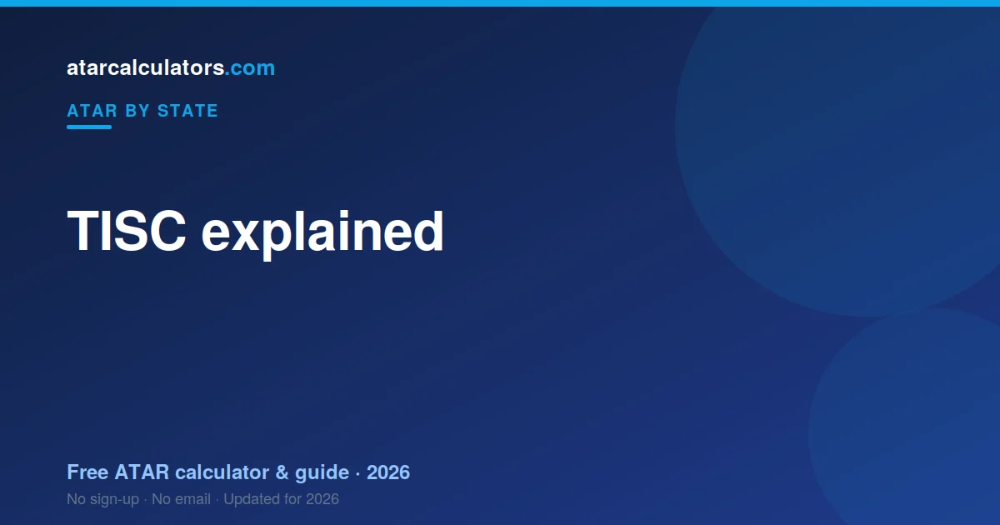

TISC, the Tertiary Institutions Service Centre, is the body that scales WACE course scores, calculates the ATAR and manages university applications for Western Australia. SCSA sets and assesses the courses and awards the WACE; TISC then scales those results, adds your best four into a Tertiary Entrance Aggregate, and ranks it into an ATAR. TISC and SCSA are different bodies with different jobs.
Key takeaways
- TISC is the Tertiary Institutions Service Centre for WA.
- It scales WACE course scores and calculates your ATAR.
- It runs university applications and offers for WA public universities.
- Your ATAR comes from a Tertiary Entrance Aggregate (best four scaled scores).
- SCSA sets and marks the courses and awards the WACE.
- TISC and SCSA are different bodies with different jobs.

What is TISC?
TISC stands for the Tertiary Institutions Service Centre. It is the organisation that processes tertiary admissions for Western Australia’s public universities, and it is the body that calculates the ATAR for WA students.
In most states there is a central admissions centre that turns senior-school results into a university rank. In WA, that centre is TISC. It sits between your WACE results and your university offer.
So when WA students ask who works out their ATAR and where their university offers come from, the answer to both is TISC.
What does TISC do?
TISC has two main jobs. First, it takes your WACE course results, scales them, and calculates your ATAR. Second, it manages the university application and offer process for WA’s participating universities.
On the ATAR side, TISC scales each of your ATAR course scores, adds your best four into an aggregate, and ranks that aggregate into an ATAR. On the applications side, it collects your course preferences and makes offers on behalf of the universities.
So TISC is both the calculator of your rank and the gateway to your offers. Understanding it helps you see how your results become a place at university.
TISC vs SCSA: what is the difference?
Students often confuse TISC with SCSA, but they do different things. SCSA, the School Curriculum and Standards Authority, sets the WACE courses, runs the exams, marks them, and awards the WACE certificate.
TISC comes after. It takes the course results that SCSA produces, scales them, and turns them into an ATAR, then handles university applications. In short: SCSA runs the courses and exams; TISC turns the results into an ATAR and an offer.
So the two bodies are a relay. SCSA hands over your marked results, and TISC converts them into the rank universities use. They are separate organisations with separate roles.
How TISC scales your results
TISC scales each ATAR course score so that a score in one course is comparable to a score in another. Scaling reflects how strong the students taking a course are across all their courses, not how hard the course feels.
A course scales up when its students are strong across the board, and down when the cohort is broad. This keeps the ATAR fair, so your rank does not depend on which courses you happened to choose. See how scaling works.
The result is a scaled score for each of your courses. Those scaled scores, not your raw marks, are what TISC uses to build your ATAR.
The Tertiary Entrance Aggregate
Once your courses are scaled, TISC adds your best four scaled scores together, then adds Western Australia’s course bonuses: 10% of your best Language other than English scaled score, 10% of your Mathematics Methods scaled score and 10% of your Mathematics Specialist scaled score, where you have them. This total is called the Tertiary Entrance Aggregate, or TEA, and it is the number that sits directly behind your ATAR. The best four scaled scores reach a maximum of 400, and the bonuses lift the maximum TEA to 430. WA is the only state that adds subject bonuses of this kind.
Because only your best four count, you are not penalised for taking a fifth or sixth course. TISC simply uses the four that work most in your favour, which gives you room to attempt more courses without risk.
Your TEA captures your strongest four scaled results. The higher your TEA, the higher your ATAR, since the ATAR is essentially your TEA expressed as a rank.
From TEA to ATAR
The final step is turning your TEA into an ATAR. TISC ranks every student’s TEA and expresses your position as an ATAR, a number up to 99.95 that shows the percentage of students you finished above.
So an ATAR of 80 means you finished ahead of about 80 percent of the relevant age group. The ATAR is a rank, not a mark, which is why it can differ from your raw scores.
This national rank is what universities across Australia use, so a WA ATAR is directly comparable to an ATAR from any other state.
ATAR eligibility: what you need beyond a number
An ATAR on its own does not admit you to a Western Australian university. To be considered as a school leaver you generally need three things: the WACE itself, competence in English as each university defines it, and a sufficiently high ATAR or selection rank for the course you want. TISC calculates the ATAR, but these eligibility requirements sit alongside it, and missing one can stop an application that the rank alone would have carried.
Achieving the WACE
The WACE, the Western Australian Certificate of Education, is awarded by SCSA when you meet its requirements across Year 11 and 12, including breadth-of-study, literacy and numeracy standards and a minimum number of completed courses. Most universities require you to have achieved the WACE to enter as a school leaver. The WACE is the qualification; the ATAR is the rank built from your ATAR-course results. You can, in principle, achieve one without the other, which is why both are checked.
English language competency
Western Australian universities require you to demonstrate competence in English, and the usual way is a scaled score of 50 or higher in an English ATAR course, which includes English, Literature or English as an Additional Language or Dialect. If your English result falls short, you may be able to demonstrate competency another way, such as sitting the Special Tertiary Admissions Test for English or completing a communications unit in your first year of study, depending on the university.
Check the exact standard. Each university sets its own English competency rule, and the accepted alternatives can differ. If your English result is near the line, confirm what your preferred university will accept before results.
Unacceptable course combinations
Some pairs of courses overlap so heavily that TISC will not count both toward your TEA. These are called unacceptable combinations, and only one score from such a pair can be used. The most commonly cited pairs are Mathematics Applications with Mathematics Specialist, and Integrated Science with either Chemistry or Physics. The practical risk is planning a load of five courses expecting five countable scores, only to find two of them are an unacceptable pair, leaving four.
| Pair | What happens |
|---|---|
| Mathematics Applications + Mathematics Specialist | Only one score can count toward the TEA |
| Integrated Science + Chemistry | Only one score can count toward the TEA |
| Integrated Science + Physics | Only one score can count toward the TEA |
The full list of unacceptable combinations is published by TISC and can change; check the current list before finalising your courses.
Accumulating scores over several years
You do not have to earn all four scaled scores in a single year. TISC allows you to accumulate scaled scores that contribute to your ATAR over five consecutive years, with no course counting more than once. This matters for students who spread their study, repeat a course, or return after a break. The best four scaled scores across that window, subject to the unacceptable-combination rules, build your TEA.
Applications and offers
Beyond calculating your ATAR, TISC runs the application process for WA’s public universities. You list your course preferences through TISC, and it makes offers on behalf of the universities in rounds.
You rank your course preferences in order, and TISC matches you to the highest preference you qualify for. This preference system means it is worth ordering your choices carefully, with your genuine first choice at the top.
So TISC is your single point of contact for applying to most WA universities, rather than applying to each one separately.
Interstate and other students
TISC also handles applications from students who did not sit the WACE, including interstate and international applicants. An ATAR earned in another state is recognised, since the ATAR is national.
If you studied elsewhere and want to apply to a WA university, TISC is still the body you go through. Your existing ATAR or qualification is assessed for entry, and offers are made the same way.
Pathways into WA universities without an ATAR
The ATAR is the best-known route into a Western Australian university, but it is far from the only one. Each of WA’s public universities runs alternative pathways for students who do not have a competitive ATAR, or no ATAR at all, and these carry large numbers of students into degrees every year. Knowing they exist changes how a borderline or disappointing rank feels, because it turns a single result into one option among several.
Portfolio and experience-based entry
Several WA universities offer entry based on a portfolio or on broader experience rather than on the ATAR alone. Edith Cowan University’s experience-based entry scheme and portfolio pathways, Murdoch’s portfolio and experience routes, and similar schemes elsewhere assess an application on study, work and a written case rather than purely on a rank. These suit capable students whose Year 12 results do not reflect their ability, or who are returning to study.
Enabling and bridging programs
Enabling programs are structured, often free, courses that build university-level skills and, on successful completion, provide a basis for admission. They are offered by or alongside each of the main WA universities and are designed for students who need a supported start. For a student who is capable of university work but short on a direct-entry rank, an enabling program can be a stronger beginning than squeezing into a course on a bare ATAR.
VET and TAFE pathways
A completed vocational qualification can open a university door. A Certificate IV, and in some cases a Certificate III with English competency, can provide a basis for admission or a pathway into a related degree, sometimes with credit. A diploma can satisfy English competency at some universities outright. Starting in vocational study and moving into a degree is a well-worn route, and the university assesses it on the vocational results rather than on a school ATAR.
The STAT and mature entry
The Special Tertiary Admissions Test, or STAT, assesses general reasoning and comprehension rather than subject knowledge, and many courses accept it as a basis for admission or as a way to meet English competency. For mature applicants, the STAT, previous study, work experience and enabling programs together provide routes that do not depend on a recent Year 12 result. An ATAR does not expire, so an older rank can also still count.
Pathways are normal, not a last resort. A large share of WA university entrants arrive through routes other than a high ATAR. If the direct route falls short, ask the university which pathway leads into your target course.
The TISC application timeline
Applications through TISC open well before results, so you register your course preferences while you are still finishing Year 12. You can lodge an application, then change your preferences up to a deadline that falls close to results. After SCSA releases WACE results and TISC releases ATARs and scaled scores in mid-December, preference changes for the main round close, and main-round offers follow a few days later, typically around the third week of December, with applications reopening for later rounds. Equity and access scheme documents have their own deadlines, often running into January.
Because the dates shift slightly each year, the safest habit is to check TISC’s published key dates rather than relying on last year’s calendar. Missing the preference-change deadline before the main round is one of the few avoidable setbacks in the whole process, because it can leave you being matched on a preference list you meant to update.
Early and conditional offers
Several WA universities make early offers through TISC before final ATARs are released, often using predicted ATARs from Year 11 or early Year 12 reports. An early offer is conditional: you still need to achieve the WACE, meet English competency, satisfy any prerequisites, and in some cases reach a specified final ATAR. Early offers give certainty for students who want it, but they do not remove the underlying requirements, so it is worth reading the conditions carefully rather than treating an early offer as a finished place.
Conditional means conditional. An early or conditional offer still depends on you meeting the WACE, English competency and any course requirements. Keep working toward them even after an early offer lands.
Responding to an offer
When an offer arrives, you respond through the process the offer specifies, by its deadline, and then enrol with the university. In most cases you can accept a current offer and still be considered for a higher preference in a later round, so holding out for a preferred course does not usually mean giving up the offer you already hold. Reading each offer’s conditions tells you exactly how this works for your situation.
A short guide for parents and carers
If you are supporting a student through Year 12 in Western Australia, a few points make the system easier to follow. TISC is the body that scales WACE results, calculates the ATAR and handles university applications; SCSA is the authority that runs the courses and exams and awards the WACE. The two work together, but the ATAR and the application process are TISC’s part of the picture, and queries about a course result go to SCSA.
The most useful thing to understand is that the ATAR is a rank, not a mark. It reports where a student sits relative to their age group, not a percentage of questions answered correctly. A student can work hard, earn solid course results, and still receive an ATAR that looks lower than those marks because of how ranking, scaling and the best-four rule work. That is normal and is not a sign of failure.
It also helps to know WA’s two distinctive features. First, the subject bonuses mean a language or advanced-maths result counts extra, which can reward a student who took those courses. Second, the ATAR is one route among many: enabling programs, portfolio and experience-based entry, VET and the STAT all lead into the same degrees. Encouraging a student to list a realistic spread of preferences, and to know the pathways exist, takes pressure off results day.
Where to turn. TISC can answer questions about applications, offers and the ATAR; SCSA about the WACE and course results; and the school’s careers adviser about subject choices and pathways. You do not have to work it out alone.
A rough timeline through Year 12
Through the year, students study their ATAR courses and complete school assessments and WACE examinations. Applications through TISC open well before results, so students register preferences while finishing the year, and some receive early conditional offers. In mid-December SCSA releases WACE results and TISC releases ATARs and scaled scores; main-round offers follow a few days later, with further rounds into the new year. Exact dates shift, so check TISC’s published key dates rather than last year’s calendar.
Inside the TISC application
Applying through TISC Online is more straightforward than it first looks. You create an account, confirm your details, and build a ranked list of course preferences drawn from TISC’s database of WA university courses. Current WACE students usually do not need to supply results, because TISC receives them directly from SCSA; interstate, international and non-school-leaver applicants provide evidence of their qualifications. You pay an application fee, and you can return to change your preferences up to the deadlines TISC sets.
The single most important habit is to treat the preference list as a living document until the deadline. Lodge it early so your place in the process is secured, then refine it as your sense of your results sharpens, and revise it decisively once your real ATAR is released. A list lodged in September and never revisited can leave you matched on choices that no longer reflect your rank.
What TISC needs from you
For a current WACE student, TISC mostly needs accurate personal and contact details and a considered preference list; your results flow in automatically. For other applicants, TISC needs evidence of the qualifications you are relying on, whether an interstate ATAR, an IB result, an overseas qualification, a VET certificate or the STAT. If you are claiming an access or equity adjustment that is not applied automatically, you also provide the supporting documentation by the scheme’s deadline.
Keep your details current. Offers and notifications reach you through the contact details in your TISC account. Out-of-date details are one of the most common and most avoidable ways to miss an offer.
After you accept an offer
TISC’s role ends at the offer. Once you accept, you enrol directly with the university, which handles your enrolment, timetable, fees and student support. If you want to keep chasing a higher preference, you can usually accept your current offer and remain in consideration for later rounds, so accepting is not a door closing. And once you are enrolled, internal and inter-university transfers based on university results remain available if your plans change.
When TISC releases results
TISC releases WA ATARs in late December, shortly after WACE results are available, with the exact date confirmed closer to the time. First-round university offers follow in January.
So results day and offers are separate moments: your ATAR in December, then your offer in the new year. See the WA ATAR release date guide for what to expect on the day.
The WA subject bonuses in detail
Western Australia is the only state that adds subject bonuses to the tertiary aggregate, and understanding them can shape your course choices. On top of your best four scaled scores, TISC adds 10% of your best Language other than English scaled score, 10% of your Mathematics Methods scaled score, and 10% of your Mathematics Specialist scaled score, where you have taken those courses. Each bonus applies even if the course is not among your best four, so a language or advanced-maths result can lift your TEA twice over: once if it is strong enough to be a top-four score, and again as a 10% bonus.
The arithmetic is worth seeing. Your best four scaled scores can reach a maximum of 400, since each course is scored out of 100. The three bonuses add up to a further 30 at most, which is why the maximum TEA in WA is 430. A student who takes a language, Methods and Specialist, and does well in all three, collects the full set of bonuses; a student who takes none collects none, and competes on the best-four total alone.
| Component | Maximum |
|---|---|
| Best four scaled scores | 400 |
| Language other than English bonus (10%) | 10 |
| Mathematics Methods bonus (10%) | 10 |
| Mathematics Specialist bonus (10%) | 10 |
| Maximum TEA | 430 |
Bonuses apply even if the bonus course is not one of your best four scaled scores.
Should you choose a subject just for the bonus?
The bonuses are a genuine incentive, but they are not a reason to take a course you will struggle in. A 10% bonus is 10% of your scaled score, so a weak result produces a small bonus, and the time spent earning it might have lifted a stronger subject further. The bonuses reward students who can do well in a language or in advanced mathematics, not students who merely enrol in them. If one of these courses suits you, the bonus is a real advantage worth claiming; if it does not, the better plan is usually to play to your strengths.
That said, the bonuses do tilt a genuinely close decision. If you are weighing two subjects you would be roughly equally strong in, and one attracts a bonus, the bonus is a sensible tie-breaker. The order of priorities stays the same as everywhere else: strength first, prerequisites second, bonuses and scaling at the margins.
What makes up a scaled score
Before TISC scales anything, each ATAR course produces a course score that is a 50:50 combination of your school-based assessment and your WACE examination, except for candidates sitting a course outside a school. In other words, half of your result comes from the work you do through the year and half from the external exam SCSA runs. A strong exam can lift a modest year of assessment, and a strong year of assessment cushions a difficult exam, which is why consistent work across both matters.
TISC then scales that combined course score so results in different courses can be compared. The scaling reflects how the students taking a course performed across all their courses, not how hard the course felt. The output is a scaled score for each course, and it is those scaled scores, not your raw marks, that feed the TEA. This is the step that most surprises students, because a solid raw mark in a course whose cohort was broad can scale to a lower scaled score, while the same raw mark in a strongly performing cohort can scale higher.
Why scaling is fair rather than a penalty
It is tempting to read scaling as punishing certain subjects, but the logic runs the other way. Without scaling, the same raw mark in two very different courses would count equally, even though it might represent very different levels of achievement. Scaling puts all courses on a common footing so that your rank does not depend on which courses you happened to choose. A student who takes demanding courses is not disadvantaged, and a student cannot game the system by loading up on courses with a reputation for easy marks, because scaling adjusts for how the cohort actually performed.
Scaling is not published in advance. TISC does not release each course’s scaling before results, so any pre-results estimate of how a course will scale is informed guesswork. Treat a calculator’s scaling as a guide, not a promise.
A worked example of a WA ATAR
Take a student with scaled scores of 67.6 in Physics, 66.5 in a language, 55.4 in English, 41.5 in Modern History and 41.0 in Mathematics Methods. TISC takes the best four, which here are Physics, the language, English and Modern History, giving a sub-total of 231.0. The language attracts a bonus of 10% of its scaled score, and Mathematics Methods attracts a bonus of 10% of its scaled score even though it is not among the best four. Those bonuses, of roughly 6.7 and 4.1, lift the total to a Tertiary Entrance Aggregate of about 241.8, which TISC then ranks into an ATAR.
The example shows two things at once. First, the best-four rule means the weakest score, Mathematics Methods here, drops out of the main total, so a single lower result does not sink the aggregate. Second, the bonus for Methods still counts even though the course missed the top four, so an advanced-maths result is never wasted. A student without a language or advanced maths would compete on the sub-total alone, with no bonuses to add.
How a TEA maps to an ATAR
The TEA is not itself the ATAR; it is the score TISC ranks. Each year TISC ranks every student’s TEA and converts the ranking into the ATAR scale, so the same TEA can map to a slightly different ATAR in different years depending on how all students performed. Published tables give an indication of the minimum TEA associated with a given ATAR, but they describe past years, not a fixed conversion. This is why a calculator can estimate your ATAR from your scaled scores but cannot promise an exact figure before TISC runs the conversion.
What stays constant is the direction: a higher TEA always ranks ahead of a lower one in the same year. So every point you add to your scaled scores, and every bonus you collect, pushes your rank up, even if the exact ATAR it produces depends on the cohort around you.
ATAR versus selection rank
The figure a course actually compares against its cut-off is often your selection rank, not your bare ATAR. A selection rank is your ATAR plus any adjustments a university applies, such as points for particular circumstances or, at some universities, for specified subjects or schemes. This means two applicants with the same ATAR can have different selection ranks for the same course, and that a published course ATAR is really a selection-rank threshold. When you compare your estimate with a course’s requirement, you are comparing selection ranks.
Adjustment and access schemes vary between WA universities, so the lift available for a given circumstance at one university may differ at another. Some adjustments are applied automatically; others need an application with evidence by a deadline. If you think you may be eligible for an access or equity scheme, check each university’s scheme early, because the deadlines can fall around results time.
Prerequisites and assumed knowledge
Some courses require specific subjects regardless of your rank. A missing prerequisite can rule you out even with a high ATAR, which is why prerequisites should shape your Year 11 and 12 subject choices, not just your application. Prerequisites are common in science, engineering, health and mathematics-heavy courses, where a particular mathematics or science course is required. Assumed knowledge is different: it is background a course expects but does not strictly require, so lacking it is allowed but can make the course harder.
Work backward from your courses. List the prerequisites of the degrees you want, then choose Year 11 and 12 subjects that satisfy them. Discovering a prerequisite gap after results is far harder to fix than planning for it early.
Why cut-offs move each year
A course’s required rank is not fixed. It reflects the demand for the course and the number of places available, so a more popular course, or one with fewer places, has a higher cut-off, and the reverse pushes it down. Last year’s figure is a guide, not a guarantee, which is why it pays to list a spread of preferences across your likely rank rather than banking on a single published number. A guaranteed-entry course, where one is offered, gives certainty that a demand-driven cut-off cannot.
Choosing WACE courses strategically
Good course selection in Western Australia balances four things: what you are strong in, what your target courses require, how courses tend to scale, and whether a course attracts a bonus. Strength comes first, because scaling and bonuses both reward a strong result and because you sustain effort more easily in courses that suit you. Prerequisites come next, since a missing one can rule you out. Scaling and the LOTE, Methods and Specialist bonuses are tie-breakers at the margins, not the starting point.
A sensible plan locks in the courses your target degrees require, adds the courses you are genuinely strongest in, and then, among roughly equal options, leans toward those that scale a little better or carry a bonus. Keep at least four strong ATAR courses so your TEA has a full best-four to draw on, carry a fifth so a weak result can drop out, and watch for unacceptable combinations that quietly cost you a countable score. Review the plan with a careers adviser, who can flag prerequisite gaps and unacceptable pairs you might miss.
How many ATAR courses to take
You need at least four ATAR courses to build a full TEA, since the aggregate uses your best four scaled scores. Most students are advised to take five, and sometimes six, so that a weaker result can drop out of the best four and so TISC has the strongest possible set to choose from. A fifth or sixth course carries no penalty: if it is not among your best four it simply does not count toward the main total, though a language or advanced-maths course can still earn its bonus even from outside the top four.
The one caution is spreading yourself too thin. Six courses only help if you can keep them all strong; a sixth course that drags down your effort across the others is a poor trade. The aim is a full, strong best-four with a little in reserve, not the largest possible number of courses.
How to read a WA ATAR estimate well
A WACE ATAR calculator is useful precisely because it builds in the WA rules: best four scaled scores, the 10% bonuses for a language, Mathematics Methods and Mathematics Specialist, and the conversion of the resulting TEA into a rank. A generic calculator that ignores the bonuses or the best-four structure will give a figure that looks precise but rests on the wrong model. An SA or NSW calculator, for instance, does not know about WA’s bonuses at all.
The biggest assumption in any WA estimate is scaling, which TISC does not publish before results. That means the estimate is a range, not a point, and it is most trustworthy when the scores you enter are realistic. The sensible way to use it is to run it several times: conservative scores for a floor, likely scores for a middle, and strong-but-plausible scores for a ceiling. The band between floor and ceiling is what you plan your preferences around.
Plan around the band. Treat your estimate as a floor-to-ceiling range and build your preference list across it, rather than betting everything on a single predicted number.
Where extra effort moves your ATAR most
Because the TEA is built from your best four scaled scores plus bonuses, effort pays off most in two places: lifting a course that is among your best four from good to strong, and shoring up a bonus course so its scaled score, and therefore its 10% bonus, is as high as possible. Pouring time into a fifth course that will not make your best four, and carries no bonus, moves the figure far less. A calculator lets you find these leverage points by raising one score at a time and watching the estimate.
None of this replaces broad competence, since you cannot know for certain in advance exactly which scores will count. But at the margins, when deciding where limited study hours should go, aiming them at counted and bonus-eligible courses is how you get the most ATAR for your effort.
TISC compared with the other admissions centres
Every state and territory has a tertiary admissions centre, and they work in much the same way: collect applications, apply their system’s aggregate and scaling rules, calculate the ATAR, and run offer rounds. TISC covers Western Australia. South Australia and the Northern Territory share SATAC, New South Wales and the ACT use UAC, Victoria uses VTAC, and Queensland uses QTAC. The ATAR itself is national, so a rank calculated by TISC means the same as the same rank from any other centre.
What differs is the machinery. Each centre applies its own certificate, courses, aggregate rules and scaling. WA’s distinctive feature is the subject bonuses: it is the only state that adds 10% of a language, Mathematics Methods and Mathematics Specialist scaled score to the aggregate. A Victorian or New South Wales student’s aggregate is built differently, with no such bonuses, even though both end up on the one ATAR scale.
| Centre | Covers |
|---|---|
| TISC | Western Australia |
| SATAC | South Australia and the Northern Territory |
| UAC | New South Wales and the ACT |
| VTAC | Victoria |
| QTAC | Queensland |
All centres produce the same national ATAR scale from their own state’s results and rules.
Applying across state borders
If you want to study interstate, you generally apply through the admissions centre for the state where the university sits, using your TISC-calculated ATAR as your rank. Many students apply through TISC for WA courses and through another centre for courses elsewhere, running two separate applications. Each centre has its own fees, deadlines and preference rules, so treat them as independent processes and check both calendars.
Because the ATAR is nationally comparable, you do not need a different rank for each state; the same ATAR travels with you. What you do need is to meet each course’s own prerequisites and any state-specific requirements, which can differ even for similar degrees. A WA student’s subject bonuses are baked into the ATAR, so they carry across automatically in the single national rank.
Common myths about the WA system
Several beliefs circulate about the Western Australian system that are worth correcting. The first is that the ATAR is a mark out of 100. It is not; it is a rank. An ATAR of 85 means you are ranked near the top 15% of your age group, not that you earned 85%. Mistaking the rank for a percentage leads students to misread both their own result and a course’s cut-off.
The second myth is that all five scores count. In WA your best four scaled scores form the main total, so a weak fifth result can simply drop out, though a language or advanced-maths course can still earn its 10% bonus from outside the top four. The third myth is that you should chase a bonus subject regardless of ability; the bonus is 10% of your scaled score, so a weak result yields a small bonus, and the time might have been better spent on a stronger course.
The fourth myth is that the ATAR is the only way into a WA university. A large share of students enter through enabling programs, portfolio and experience-based entry, VET and the STAT. Treating the ATAR as the single door creates needless pressure and hides the routes that help when a rank falls short.
Rank, not mark. If you remember one thing about the ATAR, make it this: it reports where you sit relative to your age group, which is why it can look different from your course marks.
Common mistakes to avoid
A few errors come up every year, and all are avoidable. Treating an estimate as a result is the first: a calculator gives a range built on assumptions about scaling that TISC has not published, so plan around a band, not a number. Listing too few preferences is the second: a student with only a dream course and nothing below it has no safety net if the cut-off rises. Missing a prerequisite or English competency is the third: neither is rescued by a high ATAR, so check both early. And missing a TISC deadline, especially the preference-change deadline before the main round, is the one error that can cost a place outright.
A plain-language glossary
The Western Australian system uses a handful of terms worth knowing. Keeping them straight makes every other explanation easier to follow.
| Term | What it means |
|---|---|
| TISC | The Tertiary Institutions Service Centre, which scales WACE results, calculates the ATAR and runs WA university applications. |
| SCSA | The School Curriculum and Standards Authority, which runs the WACE courses and exams and awards the certificate. |
| WACE | The Western Australian Certificate of Education, the Year 11 and 12 qualification. |
| ATAR course | A WACE course with an external exam whose scaled score can count toward the ATAR. |
| Scaled score | A course score after TISC adjusts it so courses can be compared, out of 100. |
| TEA | The Tertiary Entrance Aggregate: best four scaled scores plus WA’s 10% bonuses, up to 430. |
| Subject bonus | An extra 10% of the scaled score for a language, Mathematics Methods or Mathematics Specialist, added to the TEA. |
| ATAR | The Australian Tertiary Admission Rank, a rank between 0 and 99.95 reported in steps of 0.05. |
| Selection rank | Your ATAR plus any university adjustments, which is what a course compares against its cut-off. |
| Unacceptable combination | A pair of overlapping courses from which TISC counts only one score toward the TEA. |
| English competency | The university requirement usually met by a scaled score of 50 or higher in an English ATAR course. |
A checklist before results day
A short checklist keeps the process under control. Before results, make sure your TISC application is lodged with a realistic spread of preferences, first choice first, and that you have reviewed your preferences before the main-round deadline. Check that you have at least four strong ATAR courses, no surprise unacceptable combinations, the prerequisites for your target courses, and a path to English competency. Note the key dates for results, main-round offers and offer responses. Know which pathways apply to your preferred courses in case your ATAR falls short. With those in place, results day is about reading an outcome, not scrambling to react to one.
What to do on results day
When WACE results and your ATAR are released in mid-December, read them calmly before reacting. Compare your ATAR, plus any adjustments that give your selection rank, against the recent cut-offs for your preferences. If your top preference is within reach, you are well placed for a main-round offer. If it is not, this is the moment to use the preference changes TISC allows before the main round, swapping estimates for choices based on your real rank.
If your ATAR falls short of every preference, do not treat results day as the end. Note which later rounds apply, adjust your preferences to realistic and guaranteed-entry options, and look up the pathways into your target course: enabling programs, portfolio and experience-based entry, VET and the STAT. A plan made calmly on results day beats a scramble, and the pathways mean a lower-than-hoped ATAR rarely closes a door for good.
Keeping the ATAR in proportion
For all the detail, it helps to end where the system itself points: the ATAR is one rank, from one year, used mainly to allocate university places. It is central to admission, and worth planning for carefully, but it is not a verdict on your ability or a ceiling on your future. Western Australia’s pathways exist precisely because a single rank cannot capture everyone’s potential, and they carry large numbers of students into the same degrees each year by routes other than a high Year 12 result.
So plan well, use a good estimate, choose courses wisely, claim the bonuses you can, lodge a sensible preference list on time, and then let the process run. If your ATAR meets your goals, the path is straightforward. If it does not, the pathways are there, and they lead to the same places. Either way, understanding how TISC builds your rank turns results day from a mystery into a step you have prepared for.
How a WACE ATAR calculator helps
A WA-specific ATAR calculator is useful precisely because it builds in the local rules: your best four scaled scores, the 10% bonuses for a language, Mathematics Methods and Mathematics Specialist, and the conversion of the resulting TEA into a rank. A generic calculator that ignores the bonuses or the best-four structure will give a figure that looks precise but rests on the wrong model, because no other state works quite this way.
Use a calculator to test choices, not to lock in a number. Try different course combinations and different levels of results, and watch how your estimate moves. That tells you which courses carry your estimate, how much each bonus is worth to you, and where extra effort would help most. The estimate’s absolute value matters less than what it reveals about your choices, because scaling is not published in advance and the real ATAR depends on the cohort.
Use it to compare, not to predict. The most valuable thing a calculator shows you is how a change in one course moves your rank. That guides your effort far better than a single predicted number.
From estimate to a preference plan
Once you have a realistic estimate band, turn it into a plan. List your most-wanted course first, whatever its cut-off, then add courses whose recent cut-offs sit around the middle of your band, and finish with one or two safer or guaranteed-entry options below your floor. Because TISC offers your highest qualifying preference, this spread gives you the best shot at your top choice while making sure you are not left without an offer if your ATAR lands low.
Revisit the plan when your real ATAR arrives, before the preference-change deadline. The estimate got you a shape; the real rank lets you sharpen it. Swapping an out-of-reach top preference for a realistic one, or adding a higher reach if your ATAR beat expectations, is exactly what the preference-change window is for.
A short history of TISC and the WA ATAR
TISC was established in the mid-1970s by an agreement of Western Australia’s participating tertiary institutions, to run a shared admissions process rather than have each university handle applications alone. Over the decades the rank it produces has changed name and method. The older Tertiary Entrance Score, or TES, gave way to the Tertiary Entrance Aggregate, or TEA, in 2008, and the rank itself moved from the state-based Tertiary Entrance Rank, or TER, to the national Australian Tertiary Admission Rank, the ATAR, as states aligned their ranks onto one scale.
The subject bonuses are the distinctive survivor of this history. Western Australia chose to keep incentives for studying a language and advanced mathematics by adding 10% of those scaled scores to the aggregate, a feature no other state adopted. That is why a WA aggregate can reach 430 rather than 400, and why WA students weigh the bonuses in a way interstate students never have to.
Why the rank went national
Moving to a single national ATAR made ranks comparable across the country, so a student could apply interstate without translating their result. For WA, this meant the ATAR a student receives already folds in the subject bonuses and sits on the same scale as every other state’s. A WA ATAR of 90 means the same standing as a Victorian or New South Wales ATAR of 90, even though the aggregates behind them were built by different rules. The national scale is the common currency; the state methods are how each centre mints it.
For students, the practical upshot is simple. You do not need to understand every state’s method to use your rank; you need to understand WA’s, because that is how your own ATAR is built, and to know that the result travels nationally once TISC has calculated it.
Putting it all together
TISC’s job is to turn your WACE results into a fair, nationally comparable rank and to run the shared application and offer process for Western Australia’s public universities. It scales your course scores so courses can be compared, adds your best four scaled scores plus the state’s 10% bonuses for a language, Mathematics Methods and Mathematics Specialist into a Tertiary Entrance Aggregate, converts that into your ATAR, and matches your ranked preferences to course cut-offs. Understanding each step turns a confusing process into a sequence you can plan for.
The practical takeaways are simple. Choose courses you can do well in, keep at least four strong ATAR courses with a fifth as insurance, claim the bonuses you can genuinely earn, and watch for unacceptable combinations. Meet English competency and your target courses’ prerequisites early. Lodge your TISC application on time with a realistic spread of preferences, first choice first, and revise it before the main-round deadline when your real ATAR arrives. And remember the pathways, so a disappointing ATAR is a detour rather than a dead end.
What makes WA different, in one place
If you take one thing from this guide, let it be the handful of features that make the Western Australian system its own. The aggregate uses your best four scaled scores, not all of them, so a weak result can drop out. The state adds 10% bonuses for a language, Mathematics Methods and Mathematics Specialist, which no other state does, lifting the maximum aggregate to 430. Entry requires the WACE and English competency alongside a sufficient rank. And unacceptable combinations mean some overlapping courses cannot both count. Every one of these is something you can plan around once you know it exists.
Plan around what you control. Course choice, meeting prerequisites and English competency, a sensible preference list, and knowing your pathways are all within your control. The scaling and the cohort are not. Spend your energy on the first set.
Where to start now
Begin with your target courses. List the ones you are seriously considering, check their prerequisites, English competency requirements and recent cut-offs, and confirm your ATAR courses satisfy them. Then note TISC’s key dates for applications, preference changes, results and offers. Draft a preference list that spreads across your likely ATAR range, with your genuine first choice at the top. Identify the pathways into your target courses in case your rank falls short. With those in place, the rest of the process unfolds in a predictable order, and results day becomes a step you have prepared for rather than a moment you dread.
Scaling misconceptions worth dropping
A few ideas about scaling mislead students every year. One is that choosing a course “because it scales up” is a reliable strategy. Scaling reflects how a course’s students perform across all their courses, so a course scales up when strong students take it, which usually means you are competing against strong students. Enrolling in such a course without the ability to match that cohort does not hand you a high scaled score; it simply places you among stronger competition. The gain comes from a strong result, not from the course’s label.
Another misconception is that an “easy” course guarantees a high mark that scales to a high score. In practice, a course studied by a broad cohort tends to scale down, so a high raw mark there can translate into a modest scaled score. Neither extreme is a shortcut. The consistent lesson is that scaling rewards genuine strength relative to your peers, which is why playing to your strengths beats chasing a course’s reputation.
A third is that the bonuses can rescue a weak overall profile. The bonuses are 10% of your scaled scores in a language and advanced maths, so they add meaningfully only when those scores are already decent. They are a top-up for students who can do well in those courses, not a substitute for a strong best four. Treating them as a rescue plan leads to disappointment; treating them as a reward for genuine strength in those subjects is accurate.
No shortcuts. There is no course choice that reliably inflates your ATAR without a strong result behind it. The surest path is genuine strength in courses that suit you, with scaling and bonuses as margins, not strategies.
Balancing results and wellbeing
It is worth saying plainly that the ATAR is one input into one admission decision, and that your wellbeing through Year 12 matters more than any single point of rank. Sustained, manageable study usually produces better results than frantic cramming, because consistent performance feeds both halves of your course score and keeps you well enough to perform in exams. A balanced load of courses you can handle, with time for rest and support, is not a compromise on results; it is often the way to your best results.
If the pressure feels overwhelming, remember the structure that this guide has described: best-four scoring that forgives a weak result, pathways that lead into the same degrees, and a rank that mainly opens the first door. The system has more give in it than it can feel like in the middle of Year 12. Planning calmly, and leaning on your school, family and the universities’ support, is both better for you and better for your results.
Estimate your WA ATAR
You do not have to wait for TISC to get a sense of your ATAR. Our WACE ATAR calculator applies WA scaling to your course scores and estimates your ATAR, so you can plan ahead.
It is a useful way to see how your best four scaled scores come together, and to test how different results would change your rank. For how the calculation works in full, see how ATAR is calculated in WA.
Which universities use TISC
TISC processes admissions for Western Australia’s public universities, including the University of Western Australia, Curtin University, Edith Cowan University, Murdoch University and the University of Notre Dame Australia. Rather than applying to each one separately, you apply through TISC and list your course preferences in order.
This central system means one application covers most WA universities. TISC then makes offers on behalf of those universities, matching you to the highest preference you qualify for. So getting your preference order right, with your genuine first choice at the top, is worth the effort.
The five public universities TISC serves
TISC processes admissions for Western Australia’s five public universities, and knowing a little about each helps you build a preference list that reflects real choices rather than names. The University of Western Australia is the state’s oldest university, research-intensive and known for a course structure that channels students through broad undergraduate degrees into professional study. Curtin University is the state’s largest, with strong links to industry across business, engineering, health and the sciences.
Edith Cowan University has a particular reputation in nursing, education and the creative arts, and runs some of the most developed alternative-entry pathways in the state. Murdoch University is known for veterinary science, the health sciences and a flexible approach to entry. The University of Notre Dame Australia, with its Fremantle campus, has a strong presence in health, education and the liberal arts and runs its own admissions interview for some courses alongside the TISC process.
| University | Known for |
|---|---|
| University of Western Australia | Research intensity; broad undergraduate-to-professional structure |
| Curtin University | WA’s largest; industry links across many fields |
| Edith Cowan University | Nursing, education, creative arts; strong alternative pathways |
| Murdoch University | Veterinary and health sciences; flexible entry |
| University of Notre Dame Australia | Health, education, liberal arts; interview for some courses |
One TISC application lets you list preferences across all five. Course offerings and entry schemes change, so check each university’s current information.
Why one application covers them all
The real convenience of TISC is that a single application, with one ranked list of preferences, covers courses across all five universities. You do not lodge separate applications with each, and you do not have to decide between universities up front. You rank the courses you want, wherever they sit, and TISC makes you the best offer it can from that list. This is why the order of your preferences, rather than the choice of university, is the decision that most shapes your offer.
Getting your preferences right
Because TISC matches you to the highest preference you qualify for, the order of your course list matters. List your genuine first choice at the top, even if it is competitive, then realistic options below it as a safety net.
There is no penalty for an ambitious first preference: if you do not qualify, TISC simply moves to your next choice. So rank your list by what you truly want, from most to least, and you give yourself the best chance at your preferred course.
Common questions
What is TISC?
TISC is the Tertiary Institutions Service Centre, the body that scales WACE course scores, calculates the ATAR and manages university applications for Western Australia’s public universities.
What does TISC do?
TISC has two main jobs: it scales your WACE results and calculates your ATAR, and it manages the university application and offer process for WA. It turns the results SCSA produces into a rank and an offer.
How does TISC work out my ATAR?
TISC scales each of your ATAR course scores, adds your best four into a Tertiary Entrance Aggregate (TEA), then ranks that aggregate into an ATAR, a number up to 99.95 showing the percentage of students you finished above.
Is TISC the same as SCSA?
No. SCSA sets the WACE courses, runs and marks the exams, and awards the WACE. TISC comes after, scaling those results into an ATAR and handling university applications. They are separate bodies with separate roles.
What does TISC stand for?
TISC stands for the Tertiary Institutions Service Centre. It is the body that scales WACE results, calculates ATARs, and runs university applications and offers for Western Australia’s public universities.
Is TISC a government department?
TISC is the admissions centre established by Western Australia’s participating universities to run a shared application and admission process. It works alongside SCSA, which runs the WACE.
Does TISC mark my exams?
No. SCSA sets and marks the WACE ATAR courses and exams. TISC takes the course results SCSA produces, scales them, and calculates your ATAR.
What is the difference between TISC and SCSA?
SCSA runs the WACE courses, exams and certificate; TISC turns the resulting course scores into an ATAR and handles applications and offers. One is the qualification body, the other the admissions centre.
Which state does TISC serve?
TISC serves Western Australia. South Australia and the Northern Territory use SATAC, New South Wales and the ACT use UAC, Victoria uses VTAC, and Queensland uses QTAC.
Does TISC calculate the ATAR for all WA students?
TISC calculates ATARs for WACE students and assesses interstate and some overseas qualifications for WA university applications. It is the central ATAR calculator for the state.
What is the TEA?
The Tertiary Entrance Aggregate, or TEA, is the score behind your ATAR: the sum of your best four scaled scores plus WA’s bonuses of 10% for a language, Maths Methods and Maths Specialist, up to a maximum of 430.
How many scores count toward my TEA?
Your best four scaled scores form the main total, plus any applicable 10% bonuses for a language, Mathematics Methods and Mathematics Specialist, which count even if those courses are not in your best four.
What is the maximum TEA?
The maximum TEA in Western Australia is 430: a maximum of 400 from four scaled scores of 100, plus up to 30 from the three 10% subject bonuses.
Why is WA’s ATAR calculation different?
Western Australia is the only state that adds subject bonuses, giving 10% of a language, Maths Methods and Maths Specialist scaled score, to encourage study of those courses. The underlying ATAR scale is still national.
Does the LOTE bonus apply if the language isn’t my best subject?
Yes. The 10% language bonus applies even if the language is not one of your best four scaled scores. You receive it as long as you have a language scaled score.
Can I get both maths bonuses?
Yes. If you take both Mathematics Methods and Mathematics Specialist, you receive 10% of each scaled score as a bonus, in addition to the language bonus if you have one.
Is the ATAR a mark out of 100?
No. The ATAR is a rank. An ATAR of 80 means you finished ahead of about 80 per cent of the relevant age group, not that you scored 80 per cent.
What is the highest ATAR?
The highest ATAR is 99.95, reported in steps of 0.05. The scale runs 99.95, 99.90, 99.85 and so on down.
Is a WA ATAR the same as an interstate ATAR?
Yes. The ATAR is a national rank, so a WA ATAR calculated by TISC means the same standing as the same ATAR from any other state’s admissions centre.
Can I use my WA ATAR to apply interstate?
Yes. The ATAR is nationally comparable, so your TISC-calculated ATAR is recognised by other states’ admissions centres when you apply there, through a separate application.
Does TISC handle interstate applicants?
Yes. TISC assesses applications from students who did not sit the WACE, including interstate and international applicants, recognising an ATAR earned elsewhere or assessing another qualification.
How is each course score made up?
Each ATAR course result is a 50:50 combination of your school-based assessment and your WACE external examination, except for some non-school candidates. TISC then scales that combined score.
What does scaling do?
Scaling adjusts each course’s scores so results in different courses can be compared, reflecting how the course’s students performed across all their courses. It keeps your rank independent of which courses you chose.
Does a hard course always scale up?
Not automatically. Scaling reflects how the cohort performed across their courses, which often correlates with difficulty but is not the same thing. A strong result matters more than a course’s reputation.
Can I predict my scaling?
Only roughly. TISC does not publish each course’s scaling before results, so a calculator estimates it from past patterns. Treat the estimate as a guide, not a guarantee.
What are unacceptable combinations?
Pairs of courses that overlap so heavily that TISC counts only one score toward your TEA, such as Mathematics Applications with Mathematics Specialist, or Integrated Science with Chemistry or Physics.
How many ATAR courses should I take?
At least four to build a full TEA, and usually five or six so a weaker result can drop out of your best four. Extra courses carry no penalty if you can keep them strong.
Do I need the WACE as well as an ATAR?
Yes, generally. Most WA universities require you to achieve the WACE as a school leaver, in addition to a sufficient ATAR and English competency. The WACE and the ATAR are separate things.
How do I meet English competency?
Usually with a scaled score of 50 or higher in English, Literature or English as an Additional Language or Dialect. Alternatives such as the STAT or a first-year communications unit may be accepted; check each university.
When does TISC release ATARs?
TISC releases WA ATARs and scaled scores in mid-December, shortly after SCSA releases WACE results. Check TISC’s key dates for the exact day each year.
When do WA university offers come out?
Main-round offers follow the ATAR release, typically in the third week of December, with later rounds into the new year. TISC publishes the exact offer dates each year.
How many preferences can I list with TISC?
You list your course preferences in order through TISC, and it matches you to the highest preference you qualify for. Check the current preference limits when you apply.
Should I list my first choice at the top?
Yes. TISC offers you the highest preference you qualify for, so list your genuine first choice at the top even if it is competitive, with realistic options below as a safety net.
Which universities use TISC?
TISC processes admissions for WA’s public universities, including the University of Western Australia, Curtin University, Edith Cowan University, Murdoch University and the University of Notre Dame Australia.
Who do I contact about a course result?
SCSA. It runs the courses and exams and handles queries about course results. TISC calculates the ATAR from those results, so result queries go to SCSA, not TISC.
Who do I contact about my ATAR?
TISC. It calculates the ATAR and handles applications and offers, so questions about your ATAR, scaled scores, preferences and offers go to TISC.
Does SCSA calculate the ATAR?
No. SCSA produces the course results; TISC scales them and calculates the ATAR. The two bodies work in sequence, with SCSA first and TISC second.
What does SCSA stand for?
SCSA stands for the School Curriculum and Standards Authority, the body that sets and runs WA’s WACE courses and exams and awards the certificate.
Can TISC change a course result?
No. TISC uses the course results SCSA produces. If you believe a course result is wrong, use SCSA’s query or review process; TISC recalculates the ATAR from any corrected result.
Does moderation happen at TISC or SCSA?
Moderation of school assessments happens through SCSA, before TISC scales the course scores. SCSA ensures assessments are comparable across schools; TISC then scales the results.
What is the relay between SCSA and TISC?
SCSA runs the courses, exams and moderation and produces course scores; TISC scales those scores, builds the TEA and ranks it into an ATAR. SCSA hands over, TISC converts.
Do I deal with both bodies?
Usually you interact mainly with SCSA through your school for the WACE, and with TISC for your ATAR and university applications. Each handles its own part of the process.
Which body awards my certificate?
SCSA awards the WACE. TISC does not award a certificate; it calculates your ATAR and manages applications.
Can I query my ATAR calculation?
The ATAR follows mechanically from your scaled scores. If you think a course result is wrong, query it with SCSA; TISC recalculates from any corrected result. TISC can explain how the ATAR was built.
What if I think my scaled score is wrong?
Scaling follows a set method from your course scores. If you believe the underlying course result is wrong, use SCSA’s process for that result. TISC applies scaling consistently across students.
Does SCSA set university prerequisites?
No. The universities set prerequisites. SCSA runs the courses that satisfy them. TISC publishes prerequisites and applies them in selection.
Is the WACE the same as the ATAR?
No. The WACE is the certificate SCSA awards for completing Year 11 and 12 requirements; the ATAR is the rank TISC builds from your ATAR-course scaled scores. You can have one without the other.
Can I get the WACE without an ATAR?
Yes. You can meet the WACE requirements without taking enough ATAR courses to generate an ATAR. The WACE is the certificate; the ATAR is a separate rank for university entry.
Can I get an ATAR without the WACE?
An ATAR is built from ATAR-course scaled scores, but most universities require the WACE as well for school-leaver entry. So in practice you generally need both.
Does SCSA handle my university application?
No. SCSA runs the certificate; TISC handles university applications and offers. You apply through TISC Online, not through SCSA.
What is an ATAR course versus a General course?
ATAR courses have external exams and can count toward the ATAR; General courses do not feed the ATAR but can count toward the WACE and some pathways. The mix affects your options.
Can General courses count for university?
General courses do not feed the ATAR, but they count toward the WACE and can support some pathways, such as experience-based entry. Check which pathways accept them.
How many ATAR courses do I need for the WACE?
The WACE has its own completion requirements set by SCSA, separate from the best-four rule for the ATAR. Check SCSA’s WACE requirements, and take at least four ATAR courses for a full TEA.
Does SCSA publish scaling?
No. Scaling is applied by TISC and is not published before results. SCSA publishes course results; TISC scales them and calculates the ATAR.
Who runs the WACE exams?
SCSA sets and runs the WACE ATAR examinations. TISC uses the resulting course scores, which combine the exam and school assessment, to calculate the ATAR.
Can I contact TISC during the year?
Yes. TISC has an enquiries team for questions about applications, offers and the ATAR. Check its website for current contact details and office hours.
Does SCSA decide my ATAR eligibility?
SCSA runs the courses and the WACE; the universities set entry requirements including English competency; TISC calculates the ATAR. ATAR eligibility depends on all three working together.
What if SCSA and TISC information seem to differ?
They cover different parts of the process, so check SCSA for the WACE and course results and TISC for the ATAR and applications. If something is genuinely unclear, contact the relevant body directly.
Which body do schools deal with?
Schools deal with SCSA for the curriculum, courses and exams, and help students with TISC applications. Careers advisers bridge both for subject choice and university entry.
Is there overlap between the two bodies?
They work in sequence rather than overlap: SCSA produces results, TISC converts them into a rank and runs admissions. Understanding the handover makes the system clearer.
Where is SCSA based?
SCSA is based in Cannington in Perth. Most interaction is through your school, and SCSA publishes WACE information online.
Where is TISC based?
TISC is based in East Perth, with most of its services delivered online through TISC Online and an enquiries line.
What is the clearest way to picture the two?
SCSA runs the courses and awards the WACE; TISC turns the results into an ATAR and an offer. One is the qualification body, the other the admissions centre.
What is a good ATAR in WA?
A good ATAR depends on the course you want, since cut-offs vary. Broadly, an ATAR above 80 opens many courses, and competitive courses require more. Compare your target course’s recent cut-off rather than chasing a single number.
What ATAR do I need for most courses?
Many WA courses have cut-offs in the 70s, and some guaranteed-entry schemes admit at an ATAR of 70, with English competency and prerequisites. Competitive courses require higher. Check each course’s recent cut-off.
Is 70 enough for a WA university?
An ATAR of 70 meets the entry level for a range of courses, including some guaranteed-entry schemes, provided you meet English competency and any prerequisites. Higher-demand courses require more.
What ATAR do I need for medicine or law?
Highly competitive courses such as medicine and law require high ATARs and often extra steps such as tests or interviews. Check each university’s current requirements, which can change year to year.
Does a higher ATAR always mean more options?
Yes, broadly, because a higher rank meets more cut-offs. But prerequisites and English competency still apply, so a high ATAR does not replace the specific requirements of a course.
Can I get into a course below its listed cut-off?
Sometimes, through adjustments that lift your selection rank above your ATAR, or through a pathway. The listed cut-off is a selection-rank threshold, and adjustments can bridge a small gap.
What if my ATAR is in the 60s?
Some courses and guaranteed-entry schemes are open in that range, and pathways such as enabling programs, portfolio entry and VET broaden your options. Check which courses and pathways suit your rank.
Is an ATAR below 50 useful?
It can still support some pathways and later study, and an ATAR does not expire. Many students with lower ATARs enter university through enabling programs, VET and the STAT.
Do WA bonuses make a good ATAR easier?
For students who take a language or advanced maths and do well, the bonuses lift the TEA, which can help the rank. They do not change the national scale, so a good ATAR still means the same standing.
How do I know what my target course needs?
Check the course’s most recent cut-off, published through TISC and the university, plus its prerequisites and any extra requirements such as a portfolio or interview. Use the cut-off as a guide.
Does the cut-off include adjustments?
A published cut-off is usually a selection rank, so it already reflects the point at which selection ranks, including adjustments, reached the last place. Your own selection rank is what is compared against it.
Can I rely on last year’s cut-off?
Use it as a guide, not a promise. Cut-offs move year to year with demand and places, so build a spread of preferences rather than banking on a single figure.
What if two courses have the same cut-off?
Then choose by fit: structure, campus, prerequisites and where each leads. The cut-off tells you about demand, not about which course suits you better.
Is a course with a low cut-off worse?
No. A low cut-off reflects supply and demand, not quality. Many excellent courses have modest cut-offs because they have places available or lower applicant numbers.
How competitive is UWA?
Cut-offs at the University of Western Australia vary by course, and some are highly competitive. Rather than judging the university as a whole, compare the specific course’s recent cut-off.
Do all WA universities have similar cut-offs?
Cut-offs vary by course more than by university. The same field can have different cut-offs at different universities, so compare specific courses rather than universities overall.
Can bonuses get me over a cut-off?
Bonuses lift your TEA and therefore your ATAR, which can help you reach a cut-off. Adjustments from access schemes lift your selection rank further. Both can bridge a small gap.
What ATAR gives the most choice?
A higher ATAR meets more cut-offs, so broadly the higher your rank the more courses are open, subject to prerequisites and English competency. But the right course for you may not need the highest rank.
Should I aim for a specific ATAR number?
Aim for the courses you want, then work out the rank and prerequisites they need. Chasing a round number is less useful than targeting your actual course’s requirements.
Is the median ATAR around 70?
Because the ATAR ranks against the age group, a mid-scale ATAR sits around the middle of ATAR recipients. The exact median shifts, so treat benchmarks as a guide and check current figures.
What ATAR is considered high in WA?
An ATAR in the 90s is high, placing you in the top tenth of your age group, and opens competitive courses. But many sought-after courses are reachable below that, so define high by your target course.
Does a good ATAR guarantee my first choice?
Not by itself. You also need to meet prerequisites and English competency, and high-demand courses can have extra steps. List your first choice first and meet all its requirements.
Can I improve a borderline ATAR?
Before results, focus effort on counted and bonus courses. After results, adjustments, pathways and later study can bridge a borderline rank. A borderline ATAR is workable, not final.
How do I benchmark my estimate?
Compare your estimate band with the recent cut-offs of your target courses. If they sit inside your band, they are realistic reaches; if above your ceiling, lean on pathways and safety options.
Does a good ATAR matter after first year?
Rarely. Once you are enrolled and progressing, university results matter more than your ATAR, and transfers are based on university performance. The ATAR mainly opens the first door.
Is there a minimum ATAR for university?
Many courses set a minimum selection rank, often around 70 for guaranteed-entry schemes, but pathways admit students below that. There is no single statewide minimum; it depends on the course and route.
What ATAR do guaranteed-entry schemes need?
Guaranteed-entry schemes commonly set a selection rank such as 70, with English competency and prerequisites still required. Check each scheme’s current rank and conditions.
Can I get a good ATAR without a language or maths?
Yes. The bonuses help those who take a language or advanced maths, but a strong set of four scaled scores produces a good ATAR without them. Strength in your best four is what counts most.
How much do the bonuses move my ATAR?
The bonuses can add up to 30 to a TEA out of 430, which can lift a rank noticeably for a student who does well in the bonus courses. The exact effect depends on your scaled scores.
Where do I compare WA ATAR benchmarks?
The what-is-a-good-ATAR-in-WA and WA cut-offs guides set out benchmarks by course, and TISC and the universities publish current cut-offs. Use these rather than a single remembered number.
Can I take four ATAR courses only?
Four ATAR courses can build a full TEA, since it uses your best four scaled scores. Most students take five or six so a weaker result can drop out, but four is the minimum for a complete aggregate.
Is five courses better than four?
Usually, yes. A fifth course gives TISC a stronger set to choose your best four from, so a weak result can drop out. It carries no penalty if you can keep it reasonably strong.
Does a sixth course help?
It can, by giving more to choose from and by carrying an extra bonus course, but only if you keep it strong. A weak sixth course that drains your effort elsewhere is a poor trade.
Which four of my courses count?
Your best four scaled scores, after scaling and after the unacceptable-combination rules. TISC automatically uses the combination that gives you the highest aggregate.
Can a weak course hurt my ATAR?
Only if it is forced into your best four because you have nothing better. With five or six courses, a weak one can drop out, so broad strength protects you.
Do I pick which four count?
No. TISC uses the four scaled scores that give you the highest TEA, within the rules. You do not choose; the system takes your best combination automatically.
What if I have exactly four and one is weak?
Then that weak score counts, because you have no fifth to replace it. That is why taking a fifth course as insurance is widely advised.
Does the Research Project count in WA?
WA does not use a compulsory research project in the ATAR the way some states do. The WA TEA is built from your best four ATAR-course scaled scores plus the subject bonuses.
Can General courses count toward my best four?
No. Only ATAR courses, which have external exams, produce scaled scores for the ATAR. General courses count toward the WACE and some pathways but not the best four.
How do unacceptable combinations affect my four?
If you take an unacceptable pair, only one of the two scores can be among your counted scaled scores, so the other effectively does not count. Plan your courses to avoid this unless intended.
Is Maths Applications worth taking?
Yes, for many students. It is a valuable ATAR course that can be one of your best four, though it does not attract a bonus and forms an unacceptable combination with Maths Specialist.
Can I take both Maths Methods and Specialist?
Yes, and both attract a 10% bonus. They are not an unacceptable combination with each other; the unacceptable pairing is Maths Applications with Maths Specialist.
What courses give bonuses again?
A Language other than English, Mathematics Methods and Mathematics Specialist each give a 10% bonus of their scaled score, added to your TEA even if they are not in your best four.
Do sciences give a bonus?
No. Only a language, Maths Methods and Maths Specialist attract bonuses. Sciences are valuable ATAR courses and can be among your best four, but they carry no bonus.
Should I take English even if it won’t be top four?
Usually yes, because English competency generally requires a scaled score of 50 or higher in an English ATAR course. English may not be a top-four score but it often meets a requirement.
Can I meet the WACE without ATAR courses?
The WACE has its own completion rules set by SCSA, which can be met with a mix of courses. But to generate an ATAR you need enough ATAR courses, so plan for both.
How many courses do most students take?
Most ATAR-track students take five, and some six, ATAR courses, to build a strong best-four with insurance. At least four are needed for a full TEA.
Is it risky to take six hard courses?
It can be, if the load lowers your results across the board. Six courses only help if you can keep them strong; otherwise five well-managed courses may give a higher best-four.
Can I change courses between Year 11 and 12?
It is generally discouraged, because Year 12 courses build on Year 11. If you must change, do it early and check prerequisites and unacceptable combinations with your school.
What if I drop a course mid-year?
Dropping a course reduces how many scaled scores you will have. If it leaves you with fewer than four ATAR courses, you may not generate a full TEA. Discuss timing with your school.
Does taking a language help even if I’m average at it?
A language gives a 10% bonus of its scaled score, so even an average result adds something. Whether it is worth the effort depends on whether that time could lift a stronger course more.
Can I count a language studied in an earlier year?
Yes, within the five-year accumulation window, subject to the language-bonus timing rules. Check the current rules, as the language bonus has conditions on how recent the score must be.
Do I need maths for the ATAR?
Not necessarily for the ATAR itself, but many courses require a mathematics prerequisite. Whether you take maths should reflect your target courses’ prerequisites and your strengths.
What if I’m strong in only three courses?
You still need a fourth scaled score for a full TEA, so take at least a fourth ATAR course even if it is not your strongest. A weaker fourth is better than an incomplete aggregate.
Can a strong exam change which four count?
Yes. Because each course score is half exam, a strong exam can raise a course’s scaled score enough to enter your best four. That is why exam preparation across all courses matters.
Do I have to take an exam for every ATAR course?
Yes. ATAR courses are examined externally by SCSA, and the exam is half your course score. A course without the external exam is not an ATAR course for the ATAR.
How do I plan a balanced load?
Pick your strongest courses, cover your target courses’ prerequisites, include English for competency, add a bonus course if you can do well in it, and carry a fifth as insurance.
Is it better to specialise or spread?
Spread enough to protect your best four and meet prerequisites, but play to genuine strengths. A balanced load of courses you can do well in usually beats a narrow or overly ambitious one.
Can I take courses across two years to spread the load?
Yes, within the five-year accumulation window, with no course counting twice. Some students spread their ATAR courses to manage the load; check the rules with TISC and your school.
Where can I check course rules?
TISC’s admissions materials cover the best-four rule, bonuses and unacceptable combinations, and SCSA covers the WACE course requirements. Check both when planning your load.
Is the ATAR a percentage of marks?
No. It is a percentile rank. An ATAR of 80 means you finished ahead of about 80 per cent of the relevant age group, not that you scored 80 per cent in your courses.
Why is my ATAR lower than my course marks?
Because the ATAR is a rank built from scaled scores, not an average of your raw marks. Scaling and the best-four rule can make the rank look different from your course results.
Can my ATAR be higher than my raw marks?
It can, if your courses scaled up, because scaling can lift a strong result in a competitively studied course above its raw mark. The ATAR reflects scaled scores and your rank, not raw marks.
What does an ATAR of 99.95 mean?
It is the highest ATAR, placing you at the very top of your age group. ATARs are reported in steps of 0.05 down from there.
What does an ATAR of 50 mean?
Roughly that you are around the middle of the relevant age group. Because the ATAR ranks against the age group, not just Year 12 finishers, a mid-scale ATAR still reflects a solid position.
Is a higher ATAR always better?
For meeting cut-offs, yes, since a higher rank meets more of them. But the right course for you may not need the highest ATAR, so define success by your target course, not the number alone.
Can two students with the same marks get different ATARs?
Yes, if they took different courses that scaled differently, or different bonus courses. Scaling and bonuses mean the same raw marks in different course combinations can produce different ATARs.
Does the ATAR measure intelligence?
No. It ranks one year of senior-school performance against your age group. It is an admissions tool, not a measure of ability or potential, and it does not define your future.
Why do ATARs use 0.05 steps?
The steps give a fine-grained rank without implying more precision than the results support. Each step separates students into a narrow band of the age group.
Can my ATAR change after release?
It is set from your scaled scores at release and would change only if an underlying course result changed through SCSA’s processes, after which TISC recalculates.
Is a WA ATAR worth the same elsewhere?
Yes. The ATAR is national, so a WA ATAR means the same standing as the same ATAR from any other state when you apply interstate.
Does the age group include non-finishers?
The ATAR ranks you against the relevant age group following the national methodology, which is why a given ATAR reflects your standing among your peers, not only among Year 12 finishers.
What is a percentile rank?
A percentile rank tells you the percentage of the group you finished at or above. An ATAR is essentially a percentile rank of the age group, expressed on the 0 to 99.95 scale.
Can everyone get a high ATAR?
No. Because it is a rank, only a limited share can sit near the top by definition. Half of ranked students sit below the median, which is how ranking works.
Does a low ATAR mean I failed?
No. A low ATAR is a low rank in one year, not a failure, and it does not close off university, thanks to pathways and later study. Many graduates started with modest ATARs.
How is the ATAR different from the WACE?
The WACE is the certificate you earn by meeting SCSA’s requirements; the ATAR is a rank built from your ATAR-course scaled scores. One is a qualification, the other a rank.
Can I have a WACE but no ATAR?
Yes. If you do not take enough ATAR courses, you can earn the WACE without generating an ATAR. The two are separate outcomes of Year 11 and 12.
Does the ATAR expire?
No. An ATAR does not expire. You can use it in later years, though universities may also weigh more recent study for mature applicants.
Is the ATAR used for TAFE?
TAFE entry generally works differently and is often not ATAR-based. The ATAR is mainly a university admissions rank, though a TAFE pathway can later lead into a degree.
Why do some say the ATAR is unfair?
Because it is a single rank from one year and cannot capture everything about a student. The system acknowledges this with pathways and alternative entry, which is why the ATAR is one route, not the only one.
Does the ATAR predict university success?
It correlates loosely with first-year results but is far from the whole story. Engagement, support and fit matter a great deal, which is why pathway entrants often do as well as ATAR entrants.
Can I get into university with no ATAR at all?
Yes. Enabling programs, portfolio and experience-based entry, VET and the STAT admit students with no ATAR. Many WA students enter this way each year.
Is a 90 ATAR the top 10 per cent?
Roughly, yes. An ATAR of 90 places you near the top tenth of your age group. It opens competitive courses, though specific cut-offs and prerequisites still apply.
How do I explain my ATAR to family?
Say it is a rank showing where you finished relative to your age group, not a mark out of 100, and that it mainly opens the first university door, with pathways available if it falls short.
Should I compare my ATAR to friends’?
It is natural but not very useful, since what matters is whether your rank and requirements meet your own target course. Two people with different goals need different ranks.
Does the ATAR matter for my career?
Mostly only through the degree it helps you enter. Once you have a qualification and experience, the ATAR rarely features in employment. It is an admissions tool.
Is there life beyond a disappointing ATAR?
Absolutely. Pathways, transfer and later study mean a disappointing ATAR is a detour, not a dead end. Where you finish depends far more on what you do next than on one rank.
How precise should I treat my ATAR?
As a fine but not infinitely precise rank in 0.05 steps. Use it to meet cut-offs and plan preferences, not as a definitive measure of worth.
Can I round my ATAR up?
No. Your ATAR is the value TISC reports in 0.05 steps. Cut-offs are compared against your actual selection rank, so there is nothing to round.
What is the clearest way to think about the ATAR?
As your position in a line of your age group, from the front at 99.95 downward. It tells universities where you stand relative to others, which is all a rank can do.
What does it mean that TISC runs offers in rounds?
TISC releases offers in stages: a main round after ATARs, then further rounds for remaining places and later applicants. Each round matches applicants to the highest preference they qualify for.
Why are offers made in rounds?
Rounds let TISC fill places as applicants accept, decline or change preferences. The main round handles most school leavers; later rounds mop up remaining places and late or adjusted applications.
Can I get a better offer in a later round?
Yes. If a place opens in a higher preference, a later round can bring it. Keeping your preferences updated lets you benefit from later rounds.
Do I lose my place if I wait?
In most cases you can accept an offer and still be considered for a higher preference in a later round. Read the offer’s conditions to confirm.
How many rounds are there?
There is a main round after ATARs, then several later rounds into January and sometimes February. The exact number and dates are published by TISC each year.
What happens if I decline an offer?
Declining frees your place. You can still be considered for other preferences in later rounds, but make sure you understand the consequences before declining a firm offer.
Can I accept and then change my mind?
You can usually update preferences for later rounds even after accepting, and once enrolled you can transfer internally. Contact the university about your options.
What if no round makes an offer?
Consider pathways such as enabling programs, portfolio entry, VET and the STAT, and reapply next cycle if needed. Your ATAR does not expire, so later entry remains open.
Do all universities make offers in the same round?
TISC runs the shared rounds, so offers across the universities come through the same process. Some universities also make early offers before the main round.
Can I hold two offers?
You may receive offers across different rounds. Respond to the one you want by its deadline. In most cases accepting one does not stop a higher preference arriving later.
What is a main-round offer?
The first full round of offers after ATARs are released, where most school leavers who will get an offer receive one. It follows the ATAR release by a few days.
When is the main round?
Typically in the third week of December, a few days after ATARs are released in mid-December. TISC confirms the exact date each year.
Can I apply between rounds?
You can lodge or adjust an application for later rounds up to their deadlines. Check TISC’s key dates for when each round’s preferences close.
Do later rounds have higher or lower cut-offs?
Cut-offs can shift between rounds as places fill. Some courses may have slightly different thresholds in later rounds depending on remaining places and demand.
Is the first offer the best I’ll get?
Not necessarily. In most cases you can accept it and still be considered for a higher preference later, so the first offer is a floor, not a ceiling.
How do I respond to an offer?
Respond through the process the offer specifies, by its deadline, then enrol with the university. Follow the instructions in the offer carefully.
What if I miss an offer-response deadline?
You risk losing the offer. Note each offer’s response deadline and respond in time. If you miss it, contact the university promptly to ask about your options.
Can I defer after accepting?
Many courses allow deferral so you can start the following year. Check the course’s deferral policy and apply through the university after accepting.
Do early offers count as a round?
Early offers are made before the main round, outside the standard rounds, and are conditional. They do not replace the main round; you may still be considered for other preferences.
What happens to my other preferences after I accept?
In most cases you remain in consideration for higher preferences in later rounds unless you withdraw. Lower preferences generally fall away once you hold a higher offer.
Can I add a preference after the main round?
You can usually adjust your preferences for later rounds up to their deadlines, including adding a course. Check the deadlines for each round.
Does accepting an offer cost anything?
Accepting is part of the enrolment process with the university, which involves tuition and other fees. The TISC application fee is separate and covers the application process.
How soon must I enrol after accepting?
Enrolment timelines are set by the university. Accept by the offer deadline, then follow the university’s enrolment steps within the period it specifies.
What if I want a course in a later round only?
List it among your preferences, and if a place opens in a later round you can receive it. Keep your preferences updated so you are in the running.
Can I apply to a course that filled in the main round?
If places open in later rounds, you may still receive an offer. If a course is full, consider alternatives and pathways, and reapply next cycle if needed.
Do I respond to TISC or the university?
You respond through the process the offer specifies and enrol with the university. TISC runs the offer; the university handles enrolment once you accept.
Can my preferences carry to next year?
Applications are tied to an admissions cycle. If you apply again next year, check what carries over and what you need to resubmit.
What if my circumstances change between rounds?
Update your preferences and contact the university if needed. If a new circumstance affects your eligibility for an access scheme, check its rules and deadlines.
Is there support if I’m unsure during rounds?
Yes. TISC’s enquiries team and the universities’ admissions staff can help you understand offers and rounds. Your careers adviser can also guide your decisions.
Where do I track the offer rounds?
On TISC’s website, which publishes the current year’s offer-round dates and deadlines. Rely on these rather than last year’s calendar.
What is the first step for a WA Year 12 student?
Identify the courses you want, check their prerequisites and English competency, and make sure your ATAR courses meet them. Then note TISC’s application and key dates and plan your preferences.
When should I start planning for TISC?
Ideally in Year 10 and 11, when subject choices shape your prerequisites and bonus options. By Year 12, focus on strong results, lodging your TISC application and refining preferences.
How do I choose my ATAR courses?
Pick courses you are strong in, that meet your target courses’ prerequisites, including English for competency, adding a bonus course if you can do well in it and a fifth as insurance.
Should I prioritise strength or scaling?
Strength first. Scaling and the bonuses reward a strong result, and you sustain effort more easily in courses that suit you. Use scaling and bonuses only to choose between options you are equally strong in.
How do I meet English competency early?
Aim for a scaled score of 50 or higher in an English ATAR course, which usually satisfies competency. If you are at risk of falling short, know the alternatives such as the STAT ahead of time.
What prerequisites should I check?
Those of every course you are seriously considering, since a missing one can rule you out. List them and make sure your Year 11 and 12 choices satisfy them before it is too late to change.
How many preferences should I prepare?
Enough to spread across your likely ATAR range: your top choice first, middle options around your estimate, and a safer or guaranteed-entry option below your floor.
When do I lodge my TISC application?
Lodge it by the on-time deadline, well before results, then refine your preferences up to the deadlines. Earlier lodging secures your place in the process.
How do I estimate my ATAR as I plan?
Use a WA calculator that applies the best-four rule and bonuses, entering realistic scaled scores, and treat the result as a range. Re-run it to see which courses move your estimate most.
What should I do when my ATAR is released?
Read your ATAR and scaled scores, compare them with your preferences’ cut-offs, and update your preferences before the main-round deadline. Then wait for the offer round.
What if my ATAR falls short?
Use later rounds, adjust to realistic and guaranteed-entry preferences, and pursue pathways such as enabling programs, portfolio entry, VET and the STAT. A short ATAR is a detour, not a dead end.
Who can help me through the process?
TISC for applications and the ATAR, SCSA for the WACE and course results, the universities for course and entry questions, and your school’s careers adviser for planning and pathways.
What are the most common mistakes to avoid?
Treating an estimate as a result, listing too few preferences, missing a prerequisite or English competency, and missing a TISC deadline, especially the preference-change deadline before the main round.
How do I avoid an unacceptable combination?
Check TISC’s current unacceptable-combinations list before finalising your courses, so you do not plan a load where two courses cannot both count toward your TEA.
Should I take a bonus course?
If you can do reasonably well in a language, Maths Methods or Maths Specialist, yes, since each adds a 10% bonus. If you would struggle in it, your time is usually better spent on a stronger course.
How do I compare WA universities?
Compare the specific courses you want, their structure, prerequisites, campus and where they lead, not the universities overall. One TISC application lets you keep several in one ranked list.
Can I plan for a pathway as a backup?
Yes. Identify the enabling programs, portfolio or experience-based entry, VET routes and the STAT that lead into your target course, so you have a plan ready if your ATAR falls short.
What records should I keep?
Your TISC login, your preference list, each course’s prerequisites and cut-off, your English competency plan, and the key dates. Having these in one place makes results day calm.
How do I keep perspective through the year?
Remember the ATAR ranks one year of study and mainly opens the first university door, with pathways for when it falls short. Plan carefully, then let the process run.
What if I change my target course late?
Check its prerequisites and English competency immediately, since a late change can expose a gap. Adjust your preferences and, if needed, plan a bridging or pathway route.
Is it worth visiting open days?
Yes. Open days and course pages help you judge fit beyond the cut-off, so your preference list reflects courses you actually want, not just ranks you can reach.
How do I handle a competitive first choice?
List it first regardless of its cut-off, meet all its requirements, and add realistic options below. TISC offers your highest qualifying preference, so an ambitious first choice costs nothing.
What if I am undecided between fields?
List courses across the fields you are considering in order of preference. You do not have to commit up front, and you can adjust as your ATAR and interests sharpen.
How early can I get an offer?
Some universities make early, conditional offers from around September using predicted ATARs. These still require you to meet the WACE, English competency and any prerequisites.
Should I rely on an early offer?
Treat it as conditional and keep working toward the WACE, English competency and your results. An early offer gives certainty but is not a finished place until the conditions are met.
What is the single best habit for the year?
Keep your preference list current: lodge early, refine it as your sense of your results sharpens, and revise it decisively when your real ATAR arrives, before the deadline.
Where do I find the official information?
On TISC’s website and admissions materials for applications and the ATAR, SCSA for the WACE, and each university’s course pages. They are updated yearly and are the authoritative sources.
What should I do right now?
List your target courses, check their prerequisites and English competency, confirm your ATAR courses meet them, note TISC’s key dates, and draft a realistic spread of preferences.
How do I make results day calm?
Prepare: lodge your application, plan preferences across your estimate band, know your pathways, and note the deadlines. Then results day is reading an outcome, not reacting to a surprise.
Does TISC apply to private WA universities?
TISC processes admissions for WA’s public universities. Some private or specialist providers have their own application routes, so check whether a provider uses TISC or applies directly.
Is Notre Dame a public university?
The University of Notre Dame Australia is a private not-for-profit university that participates in the TISC process for many courses, and runs its own interview for some. Check each course’s process.
Can I apply to a WA university directly instead of through TISC?
For undergraduate school-leaver entry, TISC is the main route for the public universities. Some pathways and international applications apply directly, so check the specific course.
Does TISC cover postgraduate study?
TISC focuses on undergraduate admission. Postgraduate applications are usually made directly to the university. Check the university for postgraduate entry.
Can I apply to study part-time through TISC?
TISC handles the admission; the university sets study-load options. Apply through TISC for the course, then discuss part-time or flexible study with the university at enrolment.
Does TISC handle VET or TAFE applications?
TISC focuses on university admission. VET and TAFE applications are generally made through the training provider, though a VET qualification can later support a university pathway.
Can international students use TISC?
International students have their own routes and requirements; some apply through TISC and some directly to universities. Check TISC’s and the universities’ international information.
Does TISC assess credit for prior study?
TISC handles the admission; credit for prior study is assessed by the university once you are admitted. Ask the university about credit for a prior qualification or university study.
Can I apply for midyear entry?
Some WA courses offer midyear entry with their own application timelines, sometimes through TISC and sometimes directly. Check the course for midyear options and how to apply.
Does TISC run clearing like other systems?
TISC fills remaining places through later offer rounds rather than a separate clearing system. Keep your preferences updated to benefit from places that open in later rounds.
Can I apply to WA universities as an interstate school leaver?
Yes. You apply through TISC using your interstate ATAR, which is nationally comparable. Some universities also accept direct conditional applications; check each one.
Does TISC charge different fees for different applicants?
TISC publishes its application fees, which can vary by applicant type and timing. Check the current fees on TISC’s website when you apply.
Can I get a fee waiver or concession?
Check TISC’s current information for any concessions. Separately, access and equity schemes at universities address financial circumstances through adjustments, not application fees.
Does TISC handle scholarship applications?
No. Scholarships are offered and administered by the universities and other bodies. Apply for scholarships through the relevant provider, separately from your TISC application.
Can I change my personal details with TISC?
Yes. Update your personal and contact details in your TISC account so offers and notifications reach you. Keeping details current is important around results and offers.
What if I have two TISC accounts by mistake?
Contact TISC to resolve duplicate accounts, so your application and results are linked correctly. Do this early to avoid confusion at offer time.
Can I withdraw my TISC application?
Yes. You can withdraw if you decide not to proceed. Contact TISC or use your account, and consider the timing relative to offer rounds before withdrawing.
Does TISC keep my data private?
Your application details and ATAR are private to you, shared with institutions only as part of your application. Keep your login secure and review TISC’s privacy information.
Can someone apply on my behalf?
The application is yours, though your school or family can help you complete it. TISC deals with you as the applicant; keep your login secure.
What if I need to apply with support needs?
Tell the universities about support needs at enrolment, and check access and equity schemes that may recognise circumstances affecting your study. TISC and the universities can point you to support.
Does TISC offer an enquiries service?
Yes. TISC has an enquiries team for questions about applications, offers and the ATAR, with contact details and office hours published on its website.
Can I apply if I am repeating Year 12?
Yes. You can apply through TISC and accumulate scaled scores over several years within the rules. Discuss timing with your school, since repeating affects which scores TISC draws on.
What if I studied partly interstate and partly in WA?
Contact TISC early. How your study is assessed depends on the certificates and results you hold. TISC can advise on combining interstate and WACE study for an application.
Can I apply with a mix of qualifications?
Yes. TISC assesses a range of bases for admission, including an ATAR, a VET qualification, the STAT or an interstate or overseas result. Provide evidence of each qualification you rely on.
Does TISC help with course information?
TISC maintains a database of WA university courses with entry requirements, which you use to build your preferences. For detailed course content, check the universities’ own pages.
Can I search courses before applying?
Yes. TISC’s course search lets you explore WA university courses and their requirements before you lodge an application. Use it to plan your preference list.
What if a course I want is not listed?
It may be offered outside the TISC process, be postgraduate, or have its own application route. Check the university directly for how to apply to that specific course.
Does TISC confirm my application was received?
Yes. TISC acknowledges applications through your account. Check that your application and preferences are recorded correctly, and keep confirmation for your records.
Can I apply early and still finish Year 12?
Yes. Applications open before results, so you apply while finishing Year 12 and refine your preferences later. Some universities also make early conditional offers in this period.
Where do I manage my whole application?
Through TISC Online, where you lodge and track your application, manage preferences, and receive offers. It is the central place for your university admission in WA.
Can parents contact TISC on a student’s behalf?
TISC deals with the applicant, but it publishes general information that parents find useful, and its enquiries team can answer general questions. The account and decisions remain the student’s.
How can parents best support a Year 12 student?
Understand that the ATAR is a rank, not a mark, encourage a realistic spread of preferences, know the pathways exist, and help the student keep track of TISC’s deadlines. Support beats pressure.
Should parents help choose subjects?
Parents can help by discussing strengths, prerequisites and bonus options, but the choice should reflect the student’s abilities and goals. A careers adviser can provide balanced guidance.
What if my child’s ATAR disappoints us?
Treat it as a detour, not a dead end. Later rounds, adjustments and pathways such as enabling programs, portfolio entry, VET and the STAT lead into the same degrees. Help plan the next step calmly.
How do I explain scaling to my child?
Explain that scaling puts different courses on a common footing so the rank does not depend on which courses they chose, and that a strong result matters more than a course’s reputation.
Should we rely on the calculator’s number?
Treat it as a range, not a promise, because scaling is not published before results. Use it to see which courses move the estimate most and to plan preferences, not to fix expectations on one number.
How involved should parents be on results day?
Be present and calm. Help read the ATAR and scaled scores, compare them with the preferences’ cut-offs, and check whether to update preferences before the deadline. Then let the process run.
What if my child wants a very competitive course?
Support listing it first, meeting its requirements, and adding realistic options below. If the cut-off is beyond reach, help identify a pathway or transfer route into the same field.
Is it worth paying for ATAR tutoring?
That is a family decision. Targeted help in a student’s weaker counted courses can lift results, but broad wellbeing and consistent study matter too. Focus any help where it moves counted or bonus courses.
How do parents find reliable information?
TISC’s website for applications and the ATAR, SCSA for the WACE, and the universities’ course pages. These are updated yearly and are more reliable than older guides or forums.
Should we visit university open days?
Yes. Open days help the whole family judge course fit beyond the cut-off, so the preference list reflects courses the student genuinely wants.
What if my child is set on one university only?
Encourage listing courses, not just a university, and including options across universities as a safety net. TISC matches to the highest preference qualified for, so breadth protects the student.
How do I help with English competency worries?
Check the requirement early, usually a scaled score of 50 or higher in an English ATAR course, and know the alternatives such as the STAT. Planning ahead removes a common last-minute worry.
What if my child wants to take a gap year?
That is fine. The ATAR does not expire, and the student can apply the following year, sometimes with new credentials. A gap year does not disadvantage later study.
Should parents track the deadlines?
Sharing responsibility for the key dates helps, since a missed preference-change or offer-response deadline is one of the few avoidable setbacks. Note them together early.
How do I support a child entering through a pathway?
Treat the pathway as a legitimate route, not a lesser one. Many pathway students do as well as ATAR entrants. Encourage engagement with the program and its support services.
What if siblings compare ATARs?
Discourage direct comparison, since what matters is whether each student’s rank and requirements meet their own goals. Different courses need different ranks.
Can parents attend TISC information sessions?
Schools and universities run information sessions for parents and students, and TISC provides materials aimed at families. Attending helps you support the student’s decisions.
How do I keep the year calm at home?
Keep perspective: the ATAR is one rank that mainly opens the first door, with pathways available. Support steady study and wellbeing, and avoid turning every result into a verdict.
What if my child misses a prerequisite?
Help find a bridging or enabling route, or a pathway, and contact the university about options. A missing prerequisite is a problem to solve, not a closed door.
Should we accept the first offer?
Read it with the student. In most cases they can accept it and still be considered for a higher preference later, so the first offer is usually a floor, not the final word.
How do I talk about a low ATAR?
Acknowledge the disappointment, then focus on the next step: later rounds, adjustments and pathways. A low ATAR is a low rank in one year, not a measure of ability or future.
What role does the careers adviser play?
A careers adviser helps with subject choice, prerequisites, preferences and pathways, bridging SCSA’s and TISC’s parts of the process. Encourage the student to use this support.
Can parents help with the application itself?
Yes, with the practical steps, while keeping the account and decisions the student’s. Help check details, preferences and deadlines, and keep records in one place.
How do I support a mature-age family member applying?
Point them to TISC’s non-school-leaver information and the universities’ pathways. The STAT, previous study, work experience and enabling programs all provide routes beyond a recent ATAR.
What if we disagree about course choice?
Encourage the student to list genuine preferences while discussing options openly. The choice should reflect the student’s goals; TISC’s ranked list lets them keep several options alive.
Is it normal to feel anxious about the ATAR?
Yes, and perspective helps. The ATAR mainly opens the first door, and pathways exist for when it falls short. Preparation and realistic preferences reduce the anxiety.
How do I know my child is prepared?
They have lodged a TISC application with a realistic spread of preferences, met or planned for prerequisites and English competency, know their pathways, and have the key dates noted.
What is the best thing a parent can do?
Stay calm and informed, support steady work and wellbeing, help track deadlines, and keep perspective that the ATAR is one route among several. Your steadiness helps most.
Where should families start?
With the student’s target courses: their prerequisites, English competency and recent cut-offs, then TISC’s key dates and a realistic preference plan. Everything else follows from there.
Does TISC calculate scaled scores or does SCSA?
TISC calculates the scaled scores from the course results SCSA produces. SCSA runs the courses, exams and moderation; TISC applies scaling and builds the ATAR.
Is the WACE exam the same as the ATAR exam?
They are the same external examinations, run by SCSA for ATAR courses. The exam result combines with your school assessment to form the course score that TISC then scales.
Can I sit an ATAR exam without studying the course at school?
Non-school candidates can sit some ATAR exams, with the course score based differently from school candidates. Check SCSA’s rules for non-school candidature.
What is a course score before scaling?
It is the 50:50 combination of your moderated school assessment and your WACE exam for a course. TISC then scales this course score to produce the scaled score used in your TEA.
Does every ATAR course have the same maximum?
Each course’s scaled score is on a scale up to 100, so four maximum scaled scores give 400 before bonuses. The bonuses can add up to 30 more, for a maximum TEA of 430.
Why is the maximum TEA 430 and not 400?
Because WA adds subject bonuses: up to 10 each for a language, Maths Methods and Maths Specialist, on top of the 400 maximum from four scaled scores of 100. No other state adds these.
Does the LOTE bonus use my best language only?
Yes. If you have more than one language scaled score, only the best one is used for the 10% language bonus. The maths bonuses apply to each of Methods and Specialist separately.
Can bonuses come from courses outside my best four?
Yes. The language and maths bonuses apply even if those courses are not among your best four scaled scores. You receive the bonus as long as you have the scaled score.
Is there a bonus for sciences or humanities?
No. Only a language, Mathematics Methods and Mathematics Specialist attract bonuses. Sciences and humanities are valuable ATAR courses but carry no bonus.
How do unacceptable combinations interact with bonuses?
Unacceptable combinations limit which scores count toward your best four; the bonuses are separate. A bonus course still earns its bonus, but two courses in an unacceptable pair cannot both count in your four.
Can I accumulate scaled scores over five years?
Yes. TISC allows accumulation of contributing scaled scores over five consecutive years, with no course counting more than once. Your best four across that window build the TEA.
Does a repeated course count twice?
No. No course counts more than once toward your TEA. If you repeat a course, the eligible result can be used, but you do not get two scores from the same course.
What if I have more than four strong scores?
TISC uses the best four for the main total. Extra strong scores beyond the top four do not add to the main total, though a language or advanced-maths course still earns its bonus.
Is the scaled score the same as the exam mark?
No. The exam is half your course score, which combines with school assessment; TISC then scales that combined course score. The scaled score is not your exam mark.
Does school assessment matter as much as the exam?
Yes. Each counts for half of your course score, so consistent school assessment matters as much as the external exam. Both feed the course score that TISC scales.
Can moderation change my school mark?
Moderation through SCSA adjusts school assessments so they are comparable across schools, often using exam performance as a reference. Your moderated assessment then forms half of your course score.
What happens if I am sick for an exam?
SCSA has processes for sickness or misadventure affecting an exam. Contact your school and SCSA promptly, as these processes can affect your course result and therefore your ATAR.
Does TISC handle sickness or misadventure?
No. SCSA handles processes affecting your course results, including sickness or misadventure. TISC calculates the ATAR from the results SCSA finalises.
Can I see how my TEA was built?
Your scaled scores and ATAR are reported to you, and the published methodology shows how the best four and bonuses form the TEA. You can reconstruct your TEA from your scaled scores.
Is the TEA shown on my statement?
Your statement shows your ATAR and scaled scores, and the TEA sits directly behind the ATAR. The methodology lets you see how the TEA was built.
Does a higher scaled score always help?
Within your best four, yes, and a higher scaled score in a bonus course also increases your bonus. Raising a counted or bonus course’s scaled score always lifts your TEA.
Can I lose a bonus by dropping a course?
Yes. If you drop the only language, Maths Methods or Maths Specialist you were taking, you lose that bonus. Weigh this before dropping a bonus course late.
Do all WA students get the same scaling method?
Yes. TISC applies the same scaling method to all students, which is what makes scaled scores comparable. Your scaling reflects how each course’s cohort performed, not who you are.
Is the ATAR rounded from the TEA?
The ATAR is a rank derived from the TEA, reported in 0.05 steps. It is not a simple rounding of the TEA; TISC ranks all students’ TEAs and maps them to the ATAR scale.
Can two different TEAs give the same ATAR?
Yes. Because the ATAR is reported in 0.05 steps, a narrow band of TEAs can map to the same ATAR. Many students share each ATAR value.
Does the TEA-to-ATAR conversion change yearly?
Yes. TISC ranks each year’s TEAs, so the same TEA can map to a slightly different ATAR from year to year depending on the cohort. Published tables describe past years.
Where can I see minimum TEAs for ATARs?
Guides and TISC materials publish indicative minimum TEAs for given ATARs from past years. They are a guide, not a fixed conversion, since the ranking depends on each year’s students.
Can I calculate my own TEA?
Yes, once you know your scaled scores: add your best four, then add 10% of your language, Maths Methods and Maths Specialist scaled scores where you have them. A calculator does this for you.
Why does WA keep the bonuses?
To encourage students to study a language and advanced mathematics, which the state values. The bonuses are a long-standing incentive unique to WA among the states.
Where is the authoritative method published?
TISC publishes the ATAR calculation method, including the best-four rule, bonuses and unacceptable combinations, in its admissions materials. Check the current edition for the year that applies to you.
Does TISC publish each course’s scaling before results?
No. TISC applies scaling after results and does not release each course’s scaling in advance, which is why any pre-results estimate of scaling is informed guesswork rather than a fixed figure.
Can I count more than four scaled scores in my TEA?
No. The main total of the TEA uses your best four scaled scores. Extra courses give TISC more to choose from, and a language or advanced-maths course can still add a 10% bonus from outside the top four.
Is TISC used for TAFE as well as university?
TISC focuses on university admission for WA’s public universities. TAFE applications are generally made through the training provider, though a VET qualification can support a later university pathway.
Do I enrol through TISC after I accept an offer?
No. TISC runs applications and offers; once you accept, you enrol directly with the university. Respond to the offer by its deadline, then follow the university’s enrolment steps.
Can my selection rank differ between two WA courses?
Yes. Adjustments from access and equity schemes vary by university and course, so your selection rank for one course can differ from another even though your ATAR is the same.
What happens to a weak course in my TEA?
If you have more than four ATAR courses, a weak scaled score can drop out of your best four. It only counts if you have no stronger course to replace it.
Is the WA ATAR calculated the same for everyone?
Yes. TISC applies the same best-four rule, subject bonuses and scaling to all WACE students, producing comparable ATARs on the one national scale.
Does the English requirement affect my ATAR?
English competency is an entry requirement, usually a scaled score of 50 or higher in an English ATAR course. It affects eligibility, not the ATAR calculation itself, though English can be one of your best four.
Can I take Maths Specialist without Maths Methods?
Maths Specialist is usually studied alongside Maths Methods because of how the courses build. Check the prerequisites and your school’s advice before taking Specialist on its own.
Does Maths Applications form an unacceptable combination?
Maths Applications and Maths Specialist are an unacceptable combination, so only one can count toward your TEA. Maths Applications with Maths Methods is generally acceptable; check the current list.
How do I know my courses are ATAR courses?
ATAR courses have external WACE examinations and produce scaled scores. SCSA designates which courses are ATAR courses; General courses do not feed the ATAR. Check your course list with your school.
Can I count a language from Year 11?
The language bonus has timing rules about how recent the language scaled score must be, within the accumulation window. Check the current rules, as they specify the eligible years.
Does TISC advise on which courses to take?
TISC publishes the rules and course information; your school and careers adviser advise on course choice. Choose courses that suit your strengths and meet your target courses’ prerequisites.
Where is the most reliable source for WA ATAR rules?
TISC’s website and admissions materials for the ATAR and applications, SCSA for the WACE, and the universities’ course pages. They are updated yearly and take precedence over older guides.
Does TISC decide which university I get into?
No. TISC runs the shared application and offer process and matches your ranked preferences to each course’s requirement. The universities set their own cut-offs, prerequisites and requirements.
Can TISC change my course scores?
No. SCSA produces the course scores; TISC scales them and calculates the ATAR. Queries about a course result go to SCSA’s processes, not TISC.
What does TISC actually calculate?
TISC scales your course scores, adds your best four plus WA’s subject bonuses into a Tertiary Entrance Aggregate, and ranks that aggregate into your ATAR. It then matches your preferences to course offers.
Is my TEA shown to me?
Your scaled scores and ATAR are reported to you, and the TEA sits directly behind the ATAR. The methodology is published, so you can see how the TEA is built from your scores.
Why can the same TEA give a different ATAR in another year?
Because the ATAR is a rank. TISC ranks every student’s TEA each year, so the same TEA maps to a slightly different ATAR depending on how all students performed that year.
Does a higher TEA always mean a higher ATAR?
Within the same year, yes: a higher TEA ranks ahead of a lower one. The exact ATAR depends on the spread of all students’ TEAs that year.
What is a scaled score?
A scaled score is your course score after TISC adjusts it so courses can be compared. Each course produces one scaled score out of 100, and your best four feed the TEA.
Is the raw mark or the scaled score used?
The scaled score. Your raw course marks are scaled first, and it is the scaled scores, not the raw marks, that TISC adds into your TEA.
Can my scaled score be higher than my raw mark?
Yes. A course whose students performed strongly across their courses can scale up, lifting the scaled score above the raw mark. A course with a broad cohort can scale down.
Does English have to be one of my four?
English does not have to be among your best four scaled scores, but you generally need English competency to enter university, usually a scaled score of 50 or higher in an English ATAR course.
What if my English score is below 50?
You may be able to meet English competency another way, such as the STAT or a first-year communications unit, depending on the university. Check each university’s rule early.
Can a diploma meet English competency?
At some WA universities a completed AQF diploma meets English competency outright, and a Certificate IV with an English ATAR result can meet it at others. Confirm with the specific university.
What is the STAT?
The Special Tertiary Admissions Test assesses general reasoning and comprehension rather than subject knowledge. WA universities accept it as a basis for admission or to meet English competency in some cases.
Can current Year 12 students sit the STAT?
Current Year 12 WACE students generally cannot sit the STAT until after the WACE ATAR exams finish, and may be invited to sit it for English competency when ATARs are released. Check the current rules.
What are early offers?
Several WA universities make early, conditional offers through TISC before final ATARs, often using predicted ATARs from earlier reports. They still require you to meet the WACE, English competency and any prerequisites.
Is an early offer a guaranteed place?
An early offer is conditional. It becomes a place once you meet the conditions, such as achieving the WACE, meeting English competency and any required final ATAR. Read the conditions carefully.
How do predicted ATARs work for early offers?
Some universities use a predicted ATAR from Year 11 or early Year 12 reports to make an early offer. It is an estimate used for the offer, not your final TISC-calculated ATAR.
Can I apply to several WA universities at once?
Yes. One TISC application lets you list preferences across WA’s public universities, so you do not apply to each separately. TISC makes you the best offer from your ordered list.
Does ranking a course lower hurt my chances of it?
No. TISC offers your highest qualifying preference, so ranking reflects what you want most and never penalises a lower-ranked course.
What if I qualify for two of my preferences?
TISC offers you the higher of the two preferences you qualify for, not both. That is why order matters: your top qualifying preference is the one you receive.
Can I change my preferences after seeing my ATAR?
Yes, up to the preference-change deadline before each round. This is exactly when to swap estimates for choices based on your real ATAR.
Do I lose my offer if I wait for a later round?
In most cases you can accept an offer and still be considered for a higher preference in a later round. Read the offer’s conditions to confirm for your situation.
What happens if I get no offer?
Consider later rounds, adjust your preferences, and look at pathways such as enabling programs, portfolio entry, VET and the STAT. Missing a first-round offer is not the end of the process.
Do I respond to TISC or the university for an offer?
You respond through the process the offer specifies, by its deadline, then enrol with the university. Follow the instructions in the offer.
Is there a fee to apply through TISC?
TISC charges an application fee for the application process. Check the current fee on TISC’s website when you apply.
Can mature-age students apply through TISC?
Yes. Mature applicants can be assessed on previous study, work experience, the STAT and enabling programs, as well as on an ATAR. An ATAR does not expire.
Does an old ATAR still count?
Yes. An ATAR does not expire, so a past ATAR can still be used, often alongside more recent study for mature applicants. Check how the university weighs it.
How do I apply through TISC?
You apply online through TISC Online, where you create an account, list your course preferences and provide the details TISC needs. Check the current process when you start.
Can my school help me with a TISC application?
Yes. Schools routinely help students apply through TISC, and careers advisers can check your preferences, prerequisites and English competency. Use that support.
Where do I find reliable TISC information?
On TISC’s own website and its current university admissions materials, together with the universities’ course pages. They are updated each year, unlike older guides or forum posts.
Is it true WA scaling favours maths and languages?
WA adds a 10% bonus for a language, Maths Methods and Maths Specialist, which does favour those who do well in them. Scaling itself follows cohort performance across all courses, the same as elsewhere.
Can I rely on a course’s past scaling?
Only as a rough guide. Scaling reflects each year’s cohort and is not published before results, so past patterns inform an estimate but do not guarantee this year’s outcome.
Does a strong school with strong students scale me up?
Scaling reflects how a course’s whole cohort across the state performs, not just your school. A strong school may prepare you well, but scaling is a statewide calculation per course.
Will taking harder courses raise my ATAR?
Only if you do well in them. Harder courses often scale up because strong students take them, but you still need a strong result. A strong result in a course that suits you can beat a weak one in a hard course.
Is there a way to game the ATAR?
No reliable way. Scaling and the best-four rule reward genuine strength, and the bonuses only help if you do well in the bonus courses. The surest approach is strength in courses that suit you.
Does dropping to easier courses help my rank?
Not reliably. Courses with a broad cohort tend to scale down, so a high raw mark there can give a modest scaled score. Play to your strengths rather than chasing easy marks.
How much can one strong course lift my ATAR?
A strong scaled score in one of your best four raises your TEA directly, and if it is a bonus course it adds a bonus too. The effect depends on your other scores and the cohort.
Is wellbeing really that important for results?
Yes. Consistent, sustainable study feeds both your school assessment and your exam performance and keeps you well enough to perform. Burnout rarely produces a student’s best results.
What if I’m overwhelmed in Year 12?
Lean on your school, family and support services, and remember the structure: best-four scoring forgives a weak result, and pathways lead to the same degrees. Ask for help early.
Does cramming work for the WACE exams?
Consistent study generally beats cramming, because exams test understanding built over time and because your school assessment counts for half your course score. Steady work serves both halves.
Can I recover from a weak first semester?
Often yes. Your course score combines school assessment and the exam, so a stronger second half and a good exam can lift a course. Broad strength across courses also protects your best four.
Is it worth taking a bonus course I dislike?
Usually not. The bonus is 10% of a scaled score, so a weak result adds little, and the time might lift a stronger course more. Take a bonus course only if you can do reasonably well in it.
How do I choose between two courses I like equally?
Use the margins: prerequisites first, then scaling tendencies and any bonus. If one meets a target course’s prerequisite or carries a bonus and you would be equally strong, lean that way.
Should I compare my scaling to classmates?
Not usefully. Scaling depends on the course and the statewide cohort, and what matters is your own best four and whether your ATAR meets your target course. Comparison rarely helps.
What is the healthiest way to think about the ATAR?
As one rank from one year that mainly opens the first university door, with pathways for when it falls short. Plan carefully, work sustainably, and keep it in proportion.
Does a balanced load hurt my ATAR?
Not if the courses suit you. A balanced load you can perform in often gives a stronger best four than an overloaded or mismatched one. Strength across your counted courses is what matters.
Can support services help my results?
Yes. School support, tutoring where useful, and wellbeing support all help you study consistently and perform in exams. Using support is a strength, not a weakness.
Is one bad exam the end of my ATAR?
No. One weak exam affects one course, and the best-four rule can let that course drop out if you have stronger results. Broad preparation protects you from a single off day.
How do I stay motivated through the year?
Keep your goal in view, break study into manageable steps, and remember that consistent effort feeds both halves of your course score. Sustainable habits beat last-minute pushes.
What is the final word on scaling and strategy?
There is no shortcut that beats a strong result in courses that suit you. Use scaling and bonuses as margins, plan around what you control, and look after your wellbeing along the way.
Does TISC calculate my ATAR or does the university?
TISC calculates your ATAR from your scaled scores. The universities set their own cut-offs, prerequisites and adjustments and make offers through the TISC process, but they do not calculate the ATAR.
Can I trust an online WA ATAR calculator?
A good WA-specific calculator that applies the best-four rule and the 10% bonuses gives a useful range. Because scaling is not published in advance, treat the figure as a band, not a guarantee.
How many ATAR courses are needed for a full TEA?
At least four, since the TEA uses your best four scaled scores. Most students take five or six so a weaker result can drop out and so TISC has the strongest set to choose from.
Do the subject bonuses count if the course isn’t my best four?
Yes. The 10% bonuses for a language, Maths Methods and Maths Specialist apply even if those courses are not among your best four scaled scores.
Do I enrol through TISC or the university?
Through the university. TISC handles applications and offers; once you accept an offer you enrol directly with the university, which manages your enrolment and fees.
Can my WA ATAR be used interstate?
Yes. The ATAR is nationally comparable, so your TISC-calculated ATAR is recognised by other states’ admissions centres when you apply there through a separate application.
What is the maximum WA ATAR?
The maximum ATAR is 99.95, reported in steps of 0.05, the same national ceiling as every state. WA’s subject bonuses lift the TEA, not the ATAR ceiling.
Who do I ask about a course result versus my ATAR?
Ask SCSA about a course result, since it runs the courses and exams, and TISC about your ATAR, scaled scores and applications. The two bodies handle different parts of the process.
What is the fastest way to plan my preferences?
List your target courses, check their prerequisites, English competency and recent cut-offs, then spread your preferences across your estimate band with your first choice at the top.
Does a pathway lead to the same degree as an ATAR?
Yes. Enabling programs, portfolio and experience-based entry, VET and the STAT lead into the same degrees. Pathway entrants often do as well as ATAR entrants.
Where is the authoritative information on TISC?
On TISC’s own website and admissions materials, with SCSA for the WACE and the universities for course detail. They are updated each year and are the reliable sources.
Can I lodge my TISC preferences and change them later?
Yes. Lodge your application early to secure your place in the process, then change your preferences up to the deadlines TISC sets, including after your ATAR is released before the main-round deadline.
Does TISC tell me my scaled scores?
Yes. TISC reports your scaled scores alongside your ATAR in mid-December, so you can see exactly how each course contributed to your Tertiary Entrance Aggregate.
Is there a minimum number of courses for an ATAR?
You need at least four ATAR courses to build a full Tertiary Entrance Aggregate, since it uses your best four scaled scores. Fewer than four means an incomplete aggregate.
Can I apply to WA universities as an interstate student?
Yes. You apply through TISC using your interstate ATAR, which is nationally comparable. Some universities also accept direct conditional applications; check each one.
Do WA universities require the WACE?
Most WA universities require you to achieve the WACE for school-leaver entry, in addition to a sufficient ATAR and English competency. The WACE and the ATAR are separate requirements.
What is the quickest summary of TISC?
TISC scales your WACE results, adds your best four scaled scores plus WA bonuses into a Tertiary Entrance Aggregate, ranks that into your ATAR, and runs one shared application across WA universities.
Does TISC handle both WA public universities and TAFE?
TISC focuses on admission to WA public universities. TAFE applications are made through the training provider, though a TAFE or VET qualification can support a later university pathway.
Can I get help from TISC if I am confused?
Yes. TISC has an enquiries team for questions about applications, offers and the ATAR, and publishes guides for students and families. Your school careers adviser can also help.
What should I check before I finalise my courses?
Check that you have at least four strong ATAR courses, that you meet your target courses prerequisites and English competency, and that you have no surprise unacceptable combinations.
When does the TISC main round of offers happen?
Main-round offers typically come out in the third week of December, a few days after ATARs are released in mid-December, with later rounds running into the new year. TISC confirms the dates each year.
Why does WA add subject bonuses?
WA is the only state that adds them, to encourage students to study a language, Mathematics Methods and Mathematics Specialist. Each adds 10% of its scaled score to the TEA, even if the course is not in your best four.
How much can the bonuses add?
Up to 30 points in total: 10% of a language scaled score, 10% of Mathematics Methods and 10% of Mathematics Specialist. With a best-four maximum of 400, that lifts the maximum TEA to 430.
Do I get the bonus if I fail the bonus subject?
The bonus is 10% of your scaled score, so a low scaled score yields a small bonus. You receive it as long as you have a scaled score in the course, but a weak result adds little.
Can one language give two bonuses?
No. Only your best single language scaled score earns the 10% language bonus. Taking more than one language does not multiply the bonus; TISC uses the best one.
Does Mathematics Applications earn a bonus?
No. The maths bonuses apply to Mathematics Methods and Mathematics Specialist, not Mathematics Applications. Applications is still a valuable ATAR course, but it does not attract a bonus.
Is it worth taking a language just for the bonus?
Only if you can do reasonably well in it. A strong language result earns both a possible top-four score and a 10% bonus; a weak one earns little and costs time you might spend elsewhere.
Do the bonuses carry interstate?
Yes, indirectly. The bonuses are built into your WA ATAR, and the ATAR is national, so the rank that includes your bonuses is recognised interstate. Other states do not add their own bonuses to it.
Can bonuses push me past 99.95?
No. Bonuses lift your TEA, and a higher TEA ranks higher, but the ATAR scale still tops out at 99.95. Bonuses improve your rank within that ceiling.
Where are the bonus rules published?
TISC publishes the bonus rules in its university admissions materials each year. Check the current edition, as the specifics can change.
Do all WA universities use the same ATAR?
Yes. TISC calculates one ATAR per student, and all WA universities use that same national rank. What differs between universities is their cut-offs, prerequisites and adjustment schemes.
What is a selection rank in WA?
Your ATAR plus any adjustments a university applies, such as access or equity scheme points. A course compares your selection rank, not your bare ATAR, against its cut-off.
Do all courses use adjustments?
Many courses consider eligible adjustments, but the schemes and amounts vary by university. Check each course and university for how adjustments apply to you.
How do I know a course’s prerequisites?
TISC and the universities publish prerequisites alongside course information. Check them early, because some prerequisites must be met with Year 11 and 12 subject choices.
What if I miss a prerequisite?
You may be able to meet it through a bridging or enabling course, or by completing it later. Contact the university about your options, as they depend on the course.
Is assumed knowledge the same as a prerequisite?
No. A prerequisite must be met; assumed knowledge is background the course expects but does not require. Lacking assumed knowledge is allowed but can make the course harder.
Can I enter a WA university from TAFE?
Yes. A Certificate IV, and sometimes a Certificate III with English competency, can provide a basis for admission or a pathway into a related degree, sometimes with credit.
Does a diploma help me enter university?
A completed diploma can provide a basis for admission and sometimes credit toward a degree, and at some WA universities it meets English competency. Check how a specific diploma is recognised.
What is experience-based entry?
A pathway, offered by several WA universities, that assesses an application on study, work and a written case rather than purely on an ATAR. It suits capable students whose Year 12 results do not reflect their ability.
What is portfolio entry?
A pathway where you submit a portfolio of relevant work, sometimes with an interview, as a basis for admission. It is common in creative-arts courses. Check which courses use it and what they require.
What are enabling programs?
Structured, often free, courses that build university-level skills and, on completion, provide a basis for admission. Each main WA university offers or supports one. They suit students who need a supported start.
Can I do an enabling program after Year 12?
Yes. Enabling programs are designed for students entering or returning to study, including straight after Year 12 if a direct ATAR entry falls short. Contact the university about entry to the program itself.
Does a pathway student do as well at university?
Universities report that students who enter through pathways can do as well as ATAR entrants, particularly when they engage with their course and use support services. Pathways are a legitimate route to the same degree.
Can I combine a pathway with an ATAR application?
Yes. You can apply through TISC using your ATAR and also pursue a pathway. If your ATAR falls short, the pathway can still lead to your preferred degree.
Is the STAT hard?
The STAT assesses general reasoning and comprehension rather than specific knowledge, so you cannot cram facts for it, but you can prepare by practising the question types. Check which courses accept it.
Can the STAT meet English competency?
In some cases, yes. WA universities may accept the STAT for English competency, and current Year 12 students may be invited to sit it when ATARs are released if their English result falls short. Check the rules.
What support exists for regional WA students?
Access and equity schemes often recognise rural and remote location, and universities offer support and sometimes accommodation. Check each university’s regional support and whether you must apply.
Does TISC handle scholarships?
Scholarships are offered by the universities and other bodies, not administered through the core TISC application. Check each university’s scholarship information.
Can international students apply through TISC?
International students have their own application routes and requirements. Check TISC’s and the universities’ international information for how to apply.
What if I studied the IB in WA?
Students completing the International Baccalaureate at a WA school can apply through TISC, and an IB result can be converted to an ATAR or assessed for entry. Check the current conversion and requirements.
Where do I get advice for my situation?
TISC, the universities’ admissions staff, and your school’s careers adviser can give advice for your specific situation, which is more reliable than general rules of thumb.
Is the University of Western Australia part of TISC?
Yes. The University of Western Australia is one of the five public universities whose admissions TISC processes, alongside Curtin, Edith Cowan, Murdoch and Notre Dame.
Does Curtin use TISC?
Yes. Curtin University, the state’s largest, admits undergraduate students through the TISC application and offer process, like the other WA public universities.
Does Edith Cowan University use TISC?
Yes. Edith Cowan University admits through TISC and also runs well-developed alternative pathways such as experience-based and portfolio entry.
Does Murdoch University use TISC?
Yes. Murdoch University admits through TISC and offers flexible entry options, including portfolio and experience-based pathways.
Does Notre Dame use TISC?
The University of Notre Dame Australia admits through TISC for many courses and runs its own admissions interview for some. Check the specific course’s process.
Can one TISC application cover all five universities?
Yes. A single TISC application with one ranked preference list can include courses across all five public universities, so you do not apply to each separately.
Do I have to choose a university before applying?
No. You rank courses, wherever they sit, and TISC makes you the best offer from your list. The order of your preferences matters more than choosing a single university up front.
Which WA university has the highest cut-offs?
Cut-offs vary by course, not just by university, and move each year with demand. Rather than ranking universities, compare the recent cut-off for each specific course you want.
Does a higher cut-off mean a better course?
Not necessarily. A high cut-off reflects demand and limited places, not quality. Choose a course for its fit with your goals, not just its rank.
Can I list courses at different universities together?
Yes. Your TISC preference list can mix courses from different universities in any order. TISC matches you to the highest preference you qualify for across the whole list.
What if I want a course only one university offers?
List it at the position that reflects how much you want it. If it is your first choice, put it first, with alternatives below in case you do not qualify.
Do WA universities interview applicants?
Some courses, such as certain Notre Dame courses and some creative or health courses elsewhere, use interviews or portfolios alongside the ATAR. Check each course’s selection process.
Can I apply to a WA university and an interstate one?
Yes. Apply through TISC for WA courses and through the relevant interstate centre for courses there. The applications are separate, but your ATAR is recognised by both.
Does each university set its own prerequisites?
Yes. Prerequisites are set by the universities for their courses and published through TISC. The same field can have different prerequisites at different universities, so check each.
Do the universities set their own English competency rules?
Yes. Each WA university sets its English competency standard and the alternatives it accepts, though a scaled score of 50 or higher in an English ATAR course is the common benchmark.
Can I defer a WA university offer?
Many courses allow deferral, letting you accept a place and start the following year. Check the specific course’s deferral policy and apply through the university.
What is Access Curtin?
Access Curtin is an example of a guaranteed-entry style scheme at Curtin granting admission to selected courses requiring an ATAR of 70, applied through TISC, with English competency still required. Check its current terms.
Do universities make early offers?
Yes. Several WA universities make early, conditional offers through TISC before final ATARs, often using predicted ATARs. The conditions still include the WACE, English competency and any prerequisites.
How do I compare two WA courses?
Look at each course’s most recent cut-off, its prerequisites, its structure and where it leads, not just the rank. Use the cut-offs as a guide and rank by what you want most.
Can I change university after I start?
Internal and inter-university transfers based on university results are common. Contact the institution about transferring, which is assessed on your university study rather than your ATAR.
Which university is best for my course?
That depends on the course, its structure, campus and where it leads. Compare the specific courses rather than the universities overall, and visit open days or course pages to judge fit.
Do all five universities use the same offer rounds?
TISC runs the shared offer rounds, so offers across the universities come through the same TISC process and timetable. Individual universities may also make early offers.
Can I get offers from more than one university?
TISC offers you your highest qualifying preference, which is a single offer per round. You can receive a higher preference in a later round in most cases.
Do WA universities accept interstate ATARs?
Yes. An ATAR earned interstate is recognised because the ATAR is national. You apply through TISC, which assesses your interstate ATAR for entry.
Is TISC the only way to apply to WA universities?
TISC is the main route for undergraduate admission to WA’s public universities. Some pathways and international applications have their own routes, so check the specific university for exceptions.
Where is TISC located?
TISC is based in East Perth. Most contact is online through TISC Online, with an enquiries line for questions about applications, offers and the ATAR.
Can I visit TISC in person?
Most of the process is online, but TISC publishes contact details and office hours for enquiries. Check its website for the current ways to get help.
Does TISC run open days?
Open days are run by the individual universities, not TISC. TISC provides the application process and admissions information; the universities showcase their courses and campuses.
How do I decide between WA universities?
Compare the specific courses you want: their structure, prerequisites, campus, support and where they lead. The TISC application lets you keep several in one ranked list, so you need not decide up front.
What is the single best source on the WA universities?
Each university’s own course pages for course detail, and TISC’s admissions materials for the application process and cut-offs. They are updated each year.
How is a scaled score different from a raw mark?
A raw mark is your result before adjustment; a scaled score is that result after TISC adjusts it so courses can be compared. The TEA uses scaled scores, not raw marks.
Who decides how a course scales?
No one decides it directly. Scaling follows from how the students taking a course performed across all their courses, calculated by TISC each year. It is not set in advance.
Can scaling change between years?
Yes. Scaling reflects each year’s cohort, so a course can scale slightly differently from one year to the next. That is one reason not to rely on a fixed figure for a course.
Does a small cohort affect scaling?
Scaling is based on how a course’s students perform across their courses, regardless of cohort size. A small, strong cohort can still scale up; the mechanism is performance, not numbers.
Is English scaled like other courses?
Yes. English ATAR courses are scaled like any other, and a scaled score of 50 or higher in English, Literature or EALD usually meets the English competency requirement.
Does the WACE exam count for half my score?
Yes. Each ATAR course result is a 50:50 combination of your school assessment and your WACE external exam, except for some non-school candidates. TISC then scales that combined score.
Can a good exam rescue a weak year?
Partly. Because the exam is half your course score, a strong exam can lift a modest year of school assessment, and a strong year cushions a difficult exam. Consistency across both helps most.
What if I do badly in one exam?
One weak exam affects that course’s score, but the best-four rule means a single weak course can drop out of your TEA if you have enough stronger results. Broad strength protects you.
Does TISC see my school marks directly?
TISC uses the course scores SCSA produces, which combine your moderated school assessment and your exam. TISC scales those scores; it does not re-mark your school work.
What is moderation?
Moderation, run through SCSA, adjusts school assessments so they are comparable across schools, often using exam performance as a reference. It happens before TISC scales the course scores.
Why can my scaled score differ from classmates with the same raw mark?
If you took different courses, scaling can differ, so the same raw mark in different courses can produce different scaled scores. Within the same course, the same raw mark scales the same way.
Does taking easier courses lower my ATAR?
Scaling adjusts for how a course’s students perform, so loading up on courses with a reputation for easy marks does not reliably lift your ATAR. A strong result in a course that suits you matters more.
Is there a list of how courses scale?
Past scaling patterns are discussed in various guides, but TISC does not publish the current year’s scaling before results. Any figure before results is an estimate from past years.
Should I avoid a course because it scales down?
Not if you are strong in it. A strong result in a course that scales modestly can beat a weak result in a course that scales well. Strength comes first; scaling is a margin consideration.
Does the LOTE bonus depend on scaling?
The bonus is 10% of your language’s scaled score, so a higher scaled score means a larger bonus. Scaling affects the size of the bonus, not whether you receive it.
Can I see my scaled scores?
Yes. TISC reports your scaled scores alongside your ATAR in mid-December, so you can see how each course contributed to your TEA.
How precise is the ATAR?
The ATAR is reported in steps of 0.05, which ranks students finely without implying more accuracy than the underlying results support. Many students share each ATAR value.
Can two students have the same ATAR?
Yes. Many students share each ATAR value, because the 0.05 steps group students into narrow bands. Sharing an ATAR is normal.
Does the ATAR include students who left school?
The ATAR ranks you against the relevant age group, not only those who finished Year 12, following the national methodology. That is why a given ATAR reflects your standing among your peers.
Is a WA ATAR harder to get than interstate?
No. The ATAR is a national rank, so the same ATAR means the same standing regardless of state. WA’s bonuses are built into the WA ATAR but do not make it a different scale.
Why do people say WA scaling is generous?
Because of the subject bonuses, which no other state adds. For students who take a language or advanced maths, the bonuses can lift the TEA, but the ATAR scale itself is national and unchanged.
Can I accumulate scores over several years?
Yes. TISC allows you to accumulate scaled scores that contribute to your ATAR over five consecutive years, with no course counting more than once. Your best four across that window build the TEA.
Does repeating a course help my ATAR?
Repeating can change the scores TISC draws on, and the better result can count, subject to the accumulation and best-four rules. Whether it helps depends on your results; seek advice first.
Can I mix results from different years?
Yes, within the five-year accumulation window. TISC takes your best four eligible scaled scores across that period, so results from different years can combine, with no course counting twice.
Does a gap year affect my scaled scores?
No. Your scaled scores and ATAR stay valid. A gap year does not change them, and you can apply the following year using the same results, plus any new ones.
What is the TER?
The TER, or Tertiary Entrance Rank, was the earlier name for the rank now called the ATAR. WA, like other states, moved to the national ATAR; older documents may still say TER.
Is the TEA the same as the old TES?
The TEA replaced the earlier TES, the Tertiary Entrance Score, from 2008. The TEA is the current aggregate of your best four scaled scores plus bonuses.
How do I check my results are right?
Review your scaled scores and ATAR when TISC releases them, and use SCSA’s processes if you believe a course result is wrong. TISC recalculates the ATAR from any corrected course result.
Can my ATAR be recalculated?
If an underlying course result changes through SCSA’s processes, TISC recalculates your ATAR from the corrected result. The ATAR itself follows mechanically from your scaled scores.
Where can I learn more about scaling?
TISC’s admissions materials and the ATAR scaling guides explain the process. For how scaling feeds the WA ATAR specifically, the how-ATAR-is-calculated-in-WA guide walks through it.
When exactly are WA ATARs released?
TISC releases WA ATARs and scaled scores in mid-December, shortly after SCSA releases WACE results. The exact day is confirmed closer to the time, so check TISC’s key dates.
Do WACE results and the ATAR arrive together?
They arrive close together. SCSA releases WACE course results and TISC releases ATARs and scaled scores in mid-December. They are separate releases from the two bodies.
How will I receive my ATAR?
TISC notifies you of your ATAR and scaled scores through your TISC account and the channel it specifies. Keep your contact details current before release.
When do main-round offers come out?
Main-round offers follow the ATAR release, typically in the third week of December, with applications reopening for later rounds afterward. TISC publishes the exact dates each year.
When is the preference deadline?
Preference changes for the main round close around mid-December, close to the ATAR release. Review and update your preferences before this deadline so you are matched on the list you intend.
Are there offer rounds in January?
Yes. After the main round, further offer rounds run into January and sometimes February for remaining places, late applicants and students seeking a higher preference.
Can I update my details after applying?
Yes. Keep your contact and personal details current in your TISC account so offers and notifications reach you. Out-of-date details are a common, avoidable problem.
What if I miss the preference deadline?
You risk being matched on a preference list you meant to change. If you miss the main-round deadline, you may still adjust preferences for later rounds, but you could miss a main-round offer.
Do I have to accept my first offer?
No. You can decline, or accept and in most cases still be considered for a higher preference in a later round. Read the offer’s conditions.
What if I get no offer in the main round?
Consider later rounds, adjust your preferences, and look at pathways such as enabling programs, portfolio entry, VET and the STAT. A missed main-round offer is not the end of the process.
Can I defer my place?
Many courses allow deferral so you can start the following year. Check the specific course’s deferral policy and apply through the university.
When do early offers come out?
Early, conditional offers are made by some universities before final ATARs, often from around September, using predicted ATARs. They still depend on you meeting the WACE and other conditions.
Does an early offer lock me in?
An early offer is conditional, not a finished place. You still need the WACE, English competency, any prerequisites and sometimes a specified final ATAR. You can usually still consider other preferences.
How long is my ATAR valid?
An ATAR does not expire. You can use it in later years, though universities may also weigh more recent study for mature applicants.
Can I apply late to TISC?
Late applications are usually possible, though they can miss the main round and cost more. Apply by the on-time deadline where you can, and check TISC’s late-application rules.
What documents does TISC need?
Current WACE students usually need little beyond their details, as TISC receives results directly. Interstate, international and non-school-leaver applicants provide evidence of their qualifications. Check the current list.
Is my ATAR private?
Yes. Your ATAR and scaled scores are private to you, shared with institutions only as part of your application. Keep your TISC login secure.
Can my parents access my TISC account?
The account is yours. You can share information with your family, but TISC deals with the applicant. Keep your login secure.
What if I lose my TISC login?
Use TISC’s account recovery process to regain access, and keep your contact email current so recovery is straightforward.
Does TISC send my ATAR to interstate centres?
If you apply interstate, that centre can use your ATAR, which is nationally comparable. You lodge a separate application with the interstate centre.
What is the Tertiary Entrance Statement?
It is the statement showing your ATAR and the scaled scores used to calculate it. It is the official record of your rank for university applications.
Can I get a printed record of my ATAR?
TISC provides your ATAR and scaled scores through your account, and you can usually obtain an official statement. Check TISC’s current process for a formal record.
How soon after exams do results come?
Results and ATARs come in mid-December, a few weeks after the WACE exams finish. The exact gap varies each year; TISC publishes the dates.
When should I apply through TISC?
Apply by the on-time deadline, which falls well before results, and review your preferences before the main-round deadline. Earlier is safer; late applications can miss the main round.
Can I apply before I have my ATAR?
Yes. Applications open before results, so you list preferences while finishing Year 12, then adjust them when your ATAR is released. Some universities also make early offers in this period.
What happens between results and offers?
SCSA releases WACE results, TISC releases ATARs and scaled scores, preference changes close, and then main-round offers follow a few days later. The gap is short; check TISC’s dates.
Do I need to do anything on results day?
Read your ATAR and scaled scores, compare them with your preferences’ cut-offs, and update your preferences before the deadline if needed. Then wait for the offer round.
Can I still change my mind after an offer?
You can update preferences for later rounds, and once enrolled you can often transfer internally. Contact the institution about your options.
Where are the official key dates?
On TISC’s website, which publishes the current year’s key dates for applications, preference deadlines, results and offer rounds. Rely on these rather than last year’s calendar.
Is my interstate ATAR recognised in WA?
Yes. The ATAR is national, so an ATAR earned in another state is recognised at WA universities. You apply through TISC, which uses your interstate ATAR for entry.
Do I need to recalculate my ATAR for WA?
No. The ATAR is nationally comparable, so the same ATAR applies in WA. You do not get a different rank; you simply apply through TISC using the rank you have.
Can I apply to WA from another country?
International students have their own application routes and requirements. Some apply through TISC and some directly to universities. Check TISC’s and the universities’ international information.
How does TISC treat the IB?
Students completing the International Baccalaureate, including at a WA school, can apply through TISC, and an IB result can be converted to an ATAR or assessed for entry. Check the current conversion.
Does an IB score map to an ATAR?
Yes. There is a published conversion from the IB score to an ATAR, so IB students receive a comparable rank. The conversion is set each year; check the current table.
Can I use an overseas qualification?
TISC can assess some overseas qualifications for entry to WA universities. The treatment depends on the qualification, so check with TISC about what it needs from you.
Do interstate students get WA’s subject bonuses?
No. The subject bonuses apply to WACE scaled scores calculated by TISC. An interstate ATAR already includes that state’s own rules, and WA does not add its bonuses to an interstate rank.
Can I apply to WA and interstate at once?
Yes. Apply through TISC for WA courses and through the relevant interstate centre for courses there. The applications are separate, but your ATAR is recognised by both.
Does applying interstate cost more?
Each admissions centre has its own fees. Check the fees for TISC and for any other centre you apply through.
What if I moved to WA during Year 12?
Contact TISC and your school early. How your study is assessed depends on where you completed your courses and which certificate you hold. TISC can advise on your situation.
Can mature-age students apply without an ATAR?
Yes. Mature applicants can be assessed on previous study, work experience, the STAT and enabling programs, not only on a school ATAR. Contact TISC and the universities about your background.
Does an old WA ATAR still count?
Yes. An ATAR does not expire, so a past WA ATAR can still be used, often alongside more recent study for mature applicants. Check how the university weighs it.
How do non-school leavers apply?
Non-school leavers apply through TISC, listing their preferences, and are assessed on their qualifications, the STAT, work experience or enabling programs. TISC and the universities can advise on the right basis.
Can I enter university after working for years?
Yes. Work experience, the STAT, previous study and enabling programs all provide routes for applicants returning after time in the workforce. An older ATAR can also still count.
Do I need the WACE if I am a mature applicant?
Not always. Many courses admit mature applicants on other bases, such as the STAT, previous tertiary study or a qualification, rather than requiring a recent WACE. Check the course.
Can a Certificate IV get me into a WA university?
A Certificate IV can provide a basis for admission or a pathway into a related degree at WA universities, and with English competency can meet entry for some courses. Check each course’s requirements.
What is an enabling pathway for mature students?
An enabling program is a structured course that builds university skills and provides a basis for admission. It is well suited to mature students returning to study. Contact the university about entry to the program.
Do regional WA students get extra help?
Access and equity schemes often recognise rural and remote location, adding to the selection rank, and universities offer support. Check each university’s scheme and whether you must apply.
Can I apply through TISC from a remote community?
Yes. TISC applications are online, and support is available through schools and the universities’ outreach. Check the access schemes that may apply to remote applicants.
What if I have a disability or medical condition?
Access and equity schemes may recognise circumstances that affected your study, lifting your selection rank, and universities provide support services. Check each scheme’s criteria and how to apply with evidence.
Do access schemes guarantee a place?
No. They lift your selection rank, improving your chance against the cut-off, but a place still depends on meeting the rank, prerequisites and English competency, and on places being available.
How do I apply for an access or equity scheme?
Some adjustments apply automatically from information TISC holds; others need an application with evidence by a deadline. Check each university’s scheme and its requirements early.
Can international qualifications meet English competency?
Some can, and some international English tests are accepted, though their validity varies by university. Check with the specific university if you are relying on an international qualification for English competency.
Is the process different for homeschooled students?
Homeschooled students need the eligible WACE study TISC uses to build a TEA, which usually means enrolment in ATAR courses. Check with SCSA and TISC about eligibility and how to sit the exams.
Can I transfer from an interstate university to a WA one?
Yes. Tertiary transfer based on university study is common. You apply through TISC, and the WA university assesses your university results rather than only your ATAR. Contact the university about credit.
Does TISC assess work experience?
For some pathways and mature applications, relevant work experience can form part of the basis for admission, often alongside the STAT or a written case. Check the specific pathway’s requirements.
Can I use a partial qualification?
A partial or incomplete qualification may contribute to a pathway or to credit, depending on the course. Check with the university how it treats incomplete study.
What if my situation is unusual?
Contact TISC and the universities directly. They assess a wide range of backgrounds, and the enquiries team can tell you which basis of admission suits your situation.
Where do I start as a non-standard applicant?
Start with TISC’s information for non-school-leaver and interstate applicants and contact the universities offering your preferred courses, who can advise on the right basis for admission.
What is the single most important thing to know about TISC?
That TISC turns your WACE results into a national ATAR and runs one shared application across WA’s universities. Understanding how your scaled scores build the TEA and the ATAR lets you plan.
Is a high ATAR the only way into a WA university?
No. A large share of students enter through enabling programs, portfolio and experience-based entry, VET and the STAT. The ATAR is central but one route among several.
What is the best strategy for choosing courses?
Choose courses you can do well in, meet your target courses’ prerequisites, keep at least four strong ATAR courses, watch for unacceptable combinations, and use scaling and bonuses only at the margins.
Should I take a language for the bonus?
Only if you can do reasonably well in it. A strong language result earns a possible top-four score and a 10% bonus; a weak one earns little and costs time you might spend on a stronger course.
How do I avoid a costly mistake?
List a realistic spread of preferences, check prerequisites and English competency early, watch for unacceptable combinations, and note TISC’s deadlines, especially the preference-change deadline before the main round.
What if I am not sure which course I want?
List the courses you are considering in order of preference and keep your options open. TISC matches you to the highest you qualify for, so you do not have to commit to one up front.
How do I estimate my ATAR during the year?
Use a WA-specific calculator that applies the best-four rule and the subject bonuses, with realistic scaled scores. Treat the result as a range, since scaling is not published in advance.
Why does my calculator estimate differ from my ATAR?
A calculator estimates scaling, which TISC does not publish before results, and you may have entered scores that differ from your finals. Differences are normal; the official ATAR is the one that counts.
Can a calculator tell me my exact scaling?
No. No calculator knows the current year’s scaling before TISC applies it. A good calculator uses past patterns to estimate, which is useful as a guide but not exact.
Which scores move my estimate most?
Usually your stronger courses among your best four, and your bonus courses. A calculator lets you test this by changing one score at a time and watching the estimate move.
Should I drop a course I am weak in?
Not necessarily. If you have more than four ATAR courses, a weak one may drop out of your best four. Dropping it only helps if it frees time for courses that will count or carry a bonus.
Does taking six courses help?
It gives TISC more to choose from for your best four and can carry extra bonus courses, but only if you can keep them strong. A weak sixth course will not make your best four.
How important are the WACE exams?
Very. Each course score is half exam and half school assessment, so a strong exam can lift a modest year and a weak one can pull a course down. Prepare for both.
Can I improve my ATAR by repeating a year?
Repeating can change the scores TISC draws on, and a better result can count within the accumulation and best-four rules. Whether it raises your ATAR depends on your results; seek advice first.
Does a gap year hurt my application?
No. Your ATAR stays valid, and you can apply the following year using the same rank, sometimes with new credentials such as a STAT result. A gap year does not disadvantage your study.
How do I compare two courses’ cut-offs?
Look at each course’s most recent cut-off and remember it can shift with demand. Use it as a guide, place your preferences across your likely range, and rank by what you want most.
Is a higher cut-off a better course?
Not necessarily. A high cut-off reflects demand and limited places, not quality. Choose a course for its fit with your goals, not just its rank.
What is the safest way to list preferences?
List your most-wanted course first, then realistic options across your likely ATAR range, and include a safer or guaranteed-entry option low on the list. TISC offers your highest qualifying preference.
Will a safety option cost me my top choice?
No. TISC makes you the best offer it can from your ordered list, so a safety option lower down never displaces a higher preference you qualify for.
Can I update preferences after I see my ATAR?
Yes, up to the deadline before an offer round. This is exactly when to adjust, replacing estimates with choices based on your real ATAR.
What should I do on results day?
Read your ATAR and scaled scores, compare them with your preferences’ cut-offs, and update your preferences before the deadline if needed. Then wait for the main-round offer.
What if my ATAR is below every cut-off?
Use later rounds, adjust to realistic and guaranteed-entry preferences, and pursue pathways such as enabling programs, portfolio entry, VET and the STAT. A low ATAR is a detour, not a dead end.
Can I still study my dream course eventually?
Often yes, through a pathway or transfer if the direct ATAR route misses. Plan a realistic sequence with the university rather than treating one result as final.
Does a low ATAR limit my future?
No. Pathways, transfer and later study mean a low ATAR need not limit where you end up. Many graduates entered through routes other than a high Year 12 rank.
How do I keep perspective on results?
Remember the ATAR ranks one year of study against your age group, and that the system has pathways for when it falls short. It matters for admission but does not define your ability.
What is the most common regret students report?
Often, not listing enough preferences or not knowing the pathways existed. Both are avoidable with a little planning before results day.
Do employers care about my ATAR?
Mostly no, beyond the degree it helped you enter. Once you have a qualification and experience, the ATAR rarely features in employment. It is an admissions tool, not a career score.
Should I tell people my ATAR?
That is your choice. Your ATAR is private unless you share it, and there is no obligation to disclose it to anyone beyond your applications.
Where can I get tailored advice?
TISC, the universities’ admissions staff and your school’s careers adviser can give advice for your specific situation, which is more reliable than general rules of thumb.
What should I do first after reading this?
List your target courses, check their prerequisites and English competency, confirm your ATAR courses meet them, note TISC’s key dates, and plan a realistic spread of preferences.
Does TISC set university cut-offs?
No. Each university sets its own cut-offs for its courses, based on demand and places. TISC publishes them and runs the offer process, but the universities decide them.
Why did a course cut-off change from last year?
Cut-offs move with demand and the number of places. A more popular course, or fewer places, pushes it up; the reverse pushes it down. Last year’s figure is a guide, not a guarantee.
Is the cut-off the same as the ATAR I need?
The published cut-off is usually a selection rank, which is your ATAR plus any adjustments. Your selection rank, not your bare ATAR, is compared against the cut-off.
Can my selection rank be higher than my ATAR?
Yes. Adjustments from access or equity schemes are added to your ATAR to form your selection rank, so the rank can be higher, up to the scheme’s cap.
What circumstances attract adjustments?
Schemes commonly recognise financial hardship, disruption to study, and rural or remote location. The exact categories and amounts are set by each university.
Do I apply separately for adjustments?
Some adjustments apply automatically from information TISC holds; others need a separate application with evidence. Check each scheme’s requirements and deadlines.
Is there a cap on adjustments?
Yes. Schemes cap how many points can be added, so adjustments lift your rank within a limit. Check the current cap for each scheme.
Do adjustments guarantee a place?
No. They lift your selection rank, improving your chance against the cut-off, but a place still depends on meeting the rank, prerequisites and English competency, and on places being available.
What is a guaranteed-entry scheme?
Some universities guarantee a place at a set selection rank, so a student who meets the rank and other requirements is assured entry. Access Curtin is one example; check each scheme’s terms.
Does meeting the cut-off guarantee entry?
Usually yes if places remain and you meet the prerequisites and English competency, but in high-demand courses the rank can rise, so a guaranteed-entry course is the safer bet.
What are prerequisites?
Subjects or results a course requires regardless of your rank, such as a particular mathematics or science ATAR course. Missing a prerequisite can rule you out even with a high ATAR.
How do I find a course’s prerequisites?
TISC and the universities publish prerequisites with each course. Check them early, because some must be met with Year 11 and 12 subject choices.
Can I meet a prerequisite after Year 12?
Sometimes, through a bridging or enabling course or a later qualification. Confirm with the university that a specific option satisfies the prerequisite you need.
Does a high ATAR override a prerequisite?
No. A prerequisite must be met regardless of rank, so a high ATAR does not substitute for a missing one. Check prerequisites while you can still choose subjects to meet them.
What is assumed knowledge?
Background a course expects but does not strictly require. Lacking assumed knowledge is allowed but can make the course harder; lacking a prerequisite can rule you out.
Does every course have prerequisites?
No. Many rank applicants on selection rank alone. Others, especially in science, engineering and health, have specific prerequisites. Check each course.
How do I plan subjects for prerequisites?
Work backward from your target courses: list their prerequisites, then choose Year 11 and 12 subjects that satisfy them. Doing this early avoids discovering a gap after results.
Can I apply with incomplete prerequisites?
You can apply, but you may need to complete the prerequisite before enrolling, through a bridging option or later study. Ask the university how it handles this.
Does TISC check my English competency?
The universities set and apply English competency requirements, and TISC supports the process. It is your responsibility to make sure you meet the standard, so check early.
What counts as English competency?
Usually a scaled score of 50 or higher in English, Literature or EALD ATAR. Alternatives such as the STAT or a first-year communications unit may be accepted; check each university.
What if my English score is just below 50?
You may be able to meet English competency another way, such as the STAT when ATARs are released, or a first-year unit, depending on the university. Check the options early.
Do all universities use the same English standard?
The scaled-score-of-50 benchmark is common, but each university sets its own rule and the alternatives it accepts. Confirm the standard for your preferred university.
What if my course is very competitive?
List it first anyway, add realistic options below it, and consider pathways such as transfer or a related course if the cut-off is beyond your likely rank. You lose nothing by ranking it first.
Can I reapply next year if I miss out?
Yes. You can apply again in a later cycle, often with improved credentials such as a STAT result, bridging study or a pathway. An ATAR does not expire, so it can still count.
Does missing out this year hurt next year?
No. A fresh application is assessed on its merits. Many students enter university a year or more after Year 12 through pathways, without disadvantage to their later study.
Who sets the course cut-offs each year?
The universities set them in light of demand and places, and TISC publishes and applies them during the offer rounds. They are not fixed and can move year to year.
Where can I get tailored advice on cut-offs?
TISC’s enquiries team, the universities’ admissions staff and your school’s careers adviser can advise on cut-offs and your chances, which is more reliable than general rules of thumb.